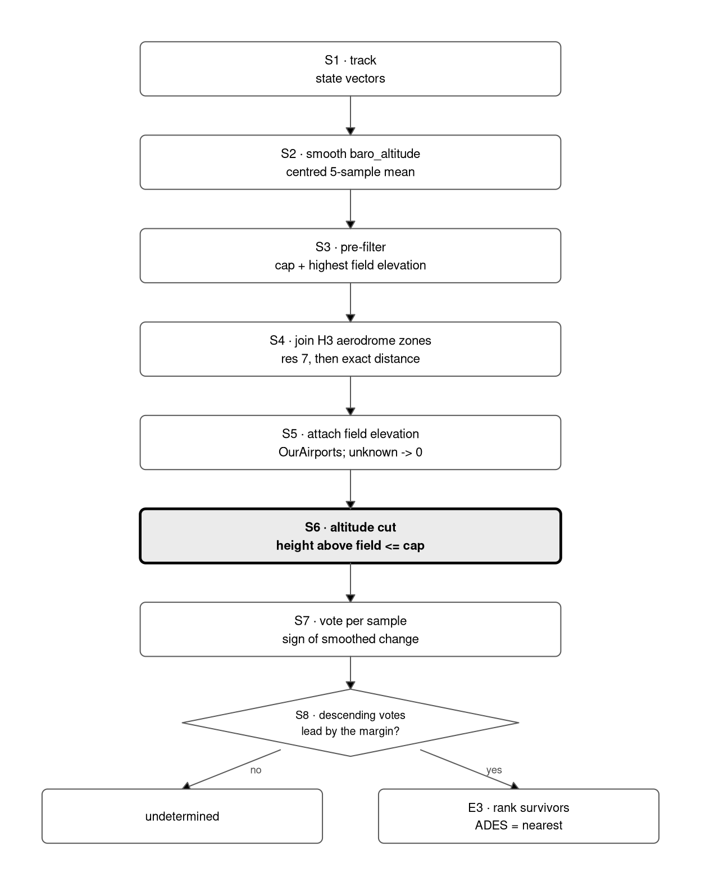
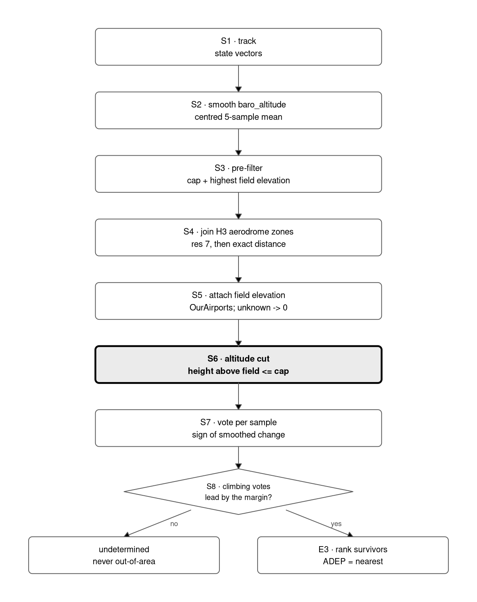
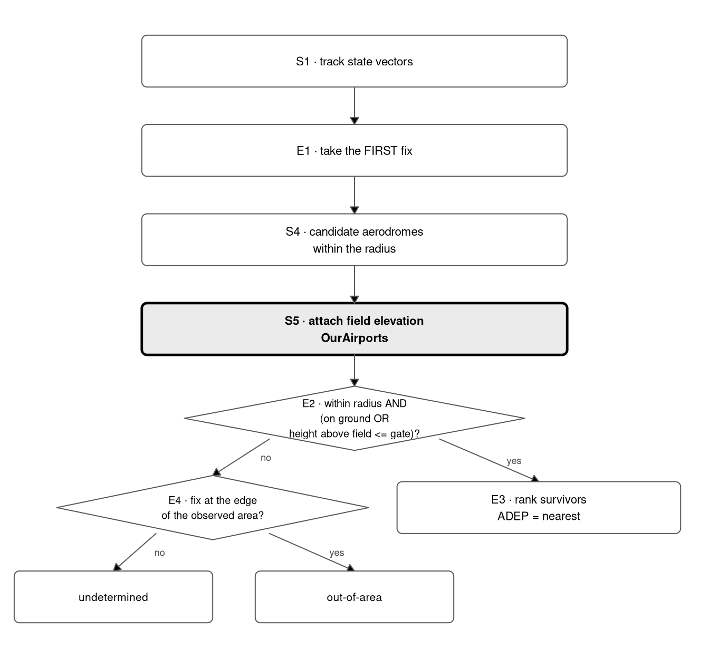

| Quantity | Definition | Reads as |
|---|---|---|
| Coverage | \(a/N\) | willingness to commit |
| Accuracy | \(c/a\) | reliability when committed |
| Correct | \(c\) | flights named right |
| Wrong | \(w = a - c\) | flights named wrong |
| Score | \(c - k\,w\) | net value at exchange rate \(k\) |
| OOA recall | OOA hits / OOA in truth | does it recognise what it cannot name? |
| OOA precision | OOA hits / OOA predicted | is it over-using the OOA label? |
| In-area coverage | answered / truth is a real aerodrome | commitment with the free wins removed |
| In-area accuracy | correct / answered, truth a real aerodrome | reliability with the free wins removed |
Detecting departure and destination aerodromes from ADS-B
Version 6.2 — the consolidated study on the datum that ships
Summary
OPDI derives a flight’s departure and destination aerodrome from ADS-B state vectors alone. This page consolidates six versions of that work into one account: what the three candidate methods are, how each behaves across its whole parameter space, which settings are best for departures and for arrivals, what the ideas that did not work were, and what the pipeline should ship.
The short version is in five parts.
The two roles want different algorithms. Departures are best served by endpoint — take the aerodrome nearest the first fix, but only commit when the fix is close and low, and abstain otherwise. Arrivals are best served by trend, the algorithm published before 2026. That split holds at every exchange rate tested.
Both roles improve. The recommended configuration — endpoint for departures, exact-distance trend for arrivals — scores 134,117 against legacy’s 122,158 on a three-day sample of 95,116 flights: a gain of +11,959, every figure from a real pipeline run.
A better way of choosing among aerodromes is what makes the tuning work. This is the substantive change, and it is worth more than any threshold on this page. The published algorithm narrowed its candidates by H3 ring count — an integer stepping about 5.2 km at resolution 7 — and computed exact distance only among the survivors, so an aerodrome a kilometre further out was eliminated before its distance was ever measured. It now carries every candidate through to an exact great-circle comparison and chooses on that.
The difference is not marginal. Applied to arrivals, the same four tuned values are worth −1,303 under ring selection and +1,586 under exact distance — the same parameters, the same data, opposite signs. Raising the ceiling admits samples from higher up, where more aerodromes fall in the same ring, so the coarse rule had most work to do exactly where it was least able to do it. Every tuned arrival value that fails under ring selection gains under exact distance.
trend’s altitude cut now measures from the aerodrome, not from sea level. This is what version 6.2 adds. Until it, trend gated on a flight level while every other altitude test in the pipeline — endpoint’s, step 04’s ground phase — gated on a height above the aerodrome’s own field elevation. The two agree at sea level and diverge by the field elevation everywhere else, so the same nominal ceiling gave a Madrid arrival 2,000 ft less room to vote than an Amsterdam one.
Moving it costs a little accuracy and buys a little coverage, and the aggregate of those two is close to nothing — Section 6.8 explains why it was never going to be otherwise, since most arrivals are at aerodromes below 500 ft where the two datums are identical by construction. The case for the change is not the aggregate: it is that the cut now means the same thing at every aerodrome, and that Section 6.2 shows the gain landing precisely where elevation predicts it should.
What ships is what the measurements prefer — and that is checked, not asserted. Every earlier version of this report stated its recommended values in prose, and those values then drifted from the code: version 6 recommended a 20 NM detection radius and a vote margin of 2, and neither was ever applied. This version reads the shipped configuration out of the pipeline run itself and compares it against every cell of the grid. It places first of 36 — and each of the three values version 6 recommended would have made arrival detection worse. Section 18.1 has the comparison.
1 What this is about
If you have not met this project before, this section is the whole of what you need. Nothing later on assumes another document.
OPDI — the Open Performance Data Initiative — publishes a description of European air traffic derived from what aircraft themselves broadcast. Most airliners transmit their position, altitude and identity several times a second over ADS-B, and a network of ground receivers records it. That signal is open, but it is raw: a stream of positions with no notion of a flight. OPDI’s job is to turn it into something you can count with, and to publish the result openly rather than behind a data-sharing agreement.
The flight list is the backbone of that. The pipeline groups each aircraft’s positions into tracks — one continuous journey, split where the signal stops for long enough — and then gives each track a row: when it started, when it ended, which aircraft, and the two fields this report is about.
ADEP and ADES are the departure and destination aerodromes. They are ICAO codes: EHAM for Amsterdam, LEMD for Madrid. Almost every question anyone asks of flight data needs them — how many movements an airport had, how long a city pair takes, which routes grew. Get them wrong and every count built on top is wrong in a way that is hard to see.
Nothing in the ADS-B signal says where a flight is going. The aircraft broadcasts where it is. So the aerodromes have to be inferred from the shape of the trajectory, and that is harder than it sounds:
- Aerodromes cluster. Several of London’s lie within a few minutes’ flying of one another, and the nearest to a descending aircraft is often not the one it lands at.
- Coverage is uneven. Low-altitude reception is poor in places, so a track may simply stop before it reaches the ground, or start well after take-off.
- Some flights genuinely begin or end outside the observed area, and a method that always answers will confidently name a wrong aerodrome for them.
So this report is about three ways of guessing, and how well each does. Each looks at the trajectory near a candidate aerodrome and decides whether to commit:
trendwatches whether the aircraft is climbing or descending near each candidate, and abstains when the altitude trace says neither clearly.endpointtakes the aerodrome nearest the first or last position, but only commits when that position is close and low; otherwise it abstains.nearesttakes the closest aerodrome unconditionally. It never abstains, and it is included as the external baseline — it is what the widely usedtrafficlibrary does.
Two of the three can refuse to answer, and that is the point. A method that always answers has perfect coverage and poor accuracy; one that answers only when certain has the reverse. Neither number means much alone, which is why Section 2 sets out how they are traded against one another.
What this version adds. Version 6.2 changes one thing in trend: the altitude ceiling below which a position is allowed to vote is now measured from the aerodrome’s own elevation rather than from sea level. The two are the same at a coastal airport and differ by half a mile at a highland one. Section 6 reports what that was worth.
1.1 A glossary
Terms this report uses without further explanation.
| Term | Meaning |
|---|---|
| ADEP / ADES | The departure and destination aerodrome, as ICAO codes. |
| Track | One continuous run of positions from a single aircraft, split where the signal gaps. The unit each row of the flight list describes. |
| State vector | A single broadcast position: latitude, longitude, altitude, velocity, at one instant. |
| H3 cell | A hexagon from Uber’s H3 grid, used to index aerodromes by location so candidates can be found without comparing against every airport in Europe. |
| Coverage | The share of reference flights the method answered at all. Abstaining lowers it. |
| Accuracy | Of the flights it answered, the share it got right. |
| Score, k | Coverage and accuracy pull against each other, so runs are ranked by correct − k × wrong. k is the exchange rate: how many correct answers one wrong answer is worth. This report uses k = 2 throughout and Section 9 shows what happens at other values. |
| Out-of-area | A flight that genuinely began or ended outside the observed region. Saying so is a correct answer, not an abstention. |
| Abstention | The method declining to name an aerodrome. Distinct from being wrong, and distinct from out-of-area. |
| Datum | The surface an altitude is measured from. Two matter here: sea level (strictly, the standard pressure surface a flight level is counted from) and field elevation, the height of the aerodrome itself. The same number means different things on each, and reconciling them is what version 6.2 is about. |
| Ceiling | The altitude below which a position is allowed to vote in trend. Always stated with its datum, because the number alone is ambiguous. |
| Cell | One combination of swept parameters — a ceiling, a radius, a vote margin — scored as a unit. A grid is a set of cells. |
| The harness | The fast re-implementation the sweeps run in. It reads a cached table of votes rather than calling the pipeline, which is what makes hundreds of cells affordable — and why its answers have to be checked against the pipeline rather than trusted. |
legacy / recommended / combined |
The three configurations results are quoted under. legacy is the pre-2026 published constants; recommended is a bare DetectionConfig(), so it is whatever the pipeline currently ships; combined is assembled from the sweep optima. The last two are not the same — Section 18.1 is about the difference. |
| Ground truth | EUROCONTROL Network Manager flight data, used as the reference. Not published with this report; see Section 20. |
NoteReading this page
Every number below is an inline expression over a CSV in data/, and every one of those CSVs is produced by a job in benchmarks/regenerate_v62.py — which this page runs before drawing anything. Nothing is typed into the prose, and nothing is read that the checked-out code did not produce. Section 20 lists the command and commit behind each figure. Where this page disagrees with versions 1–5, it says so and gives the reason; those versions stay published unchanged.
2 How the metrics work
Five quantities are reported for every setting, for each role separately. Four of them are unavoidable and the fifth is a judgement, so it is worth being precise about all five before any of them are used to argue for a parameter.
Write \(N\) for the number of ground-truth flights in the sample, \(a\) for the number the method answers (names an aerodrome, or explicitly says out-of-area), \(c\) for the number it answers correctly, and \(w = a - c\) for the number it answers wrongly.
Coverage is \(a/N\): the share of flights the method is willing to commit on. A method that abstains everywhere has coverage zero and cannot be wrong.
Accuracy is \(c/a\): of the flights it committed on, the share it got right. Accuracy says nothing about how often the method declined to answer, so a method can buy accuracy simply by abstaining more.
Correct (\(c\)) and wrong (\(w\)) are the raw counts. They matter because coverage and accuracy generally move in opposite directions — every extra answer a method gives is one it was previously unsure about, so raising coverage tends to lower accuracy — and neither ratio says whether a particular exchange was worth making. The counts do.
Score is \(c - k\,w\). It exists to make the exchange rate explicit: a change to a parameter is worth taking if and only if it wins more than \(k\) correct answers for each wrong one it introduces.
The value of \(k\) is where judgement enters. This study uses \(k = 2\) by default, on the following argument. A silence — an abstention — corrupts one movement count, and it is visible: it arrives downstream as an explicit null that any consumer can filter on. A wrong aerodrome corrupts two movement counts, the one it invents and the one it omits, and it is invisible: nothing downstream can distinguish it from a correct answer. Two errors for one, plus undetectability, is the case for \(k = 2\).
That is an argument, not a measurement, and rankings do move with \(k\). So every headline choice on this page is also scored at \(k = 1\) and \(k = 3\), and where the ranking changes, the page says so.
2.1 Out-of-area, and why the headline numbers are decomposed
Roughly one flight in six in the sample genuinely begins or ends outside the observed area. Such a flight has no nameable aerodrome, and the correct answer is the literal label OOA. This creates a way to score well for a bad reason: a method that labels liberally out-of-area collects those flights for free.
So each side is also reported three further ways — out-of-area recall and precision, which show whether the free wins are being taken honestly, and in-area coverage and accuracy, which restrict to flights whose truth is a real aerodrome and are the numbers to read when comparing naming rules.
3 The sample
The 2025 period is 5-7 June 2025, three consecutive days, giving 95,116 ground-truth flights after alignment with the Network Manager reference.
Ground truth is the EUROCONTROL Network Manager flight table, joined to ADS-B tracks on aircraft address, callsign and date. The join key is AIRCRAFT_ADDRESS, which is the icao24 of the ADS-B message.
4 The three methods
All three name an aerodrome by choosing among candidates, and two of the three choose the same way, so the shared machinery is worth stating once:
Candidate selection. Every aerodrome whose H3 detection zone the aircraft passed through is a candidate. Each candidate’s exact great-circle distance to the track’s closest approach is computed, and the smallest wins. No candidate is eliminated before its distance is measured.
The scheduled-service penalty. An aerodrome without scheduled commercial service has a fixed distance — 10 NM as shipped — added to its effective distance before that comparison, so a military or general-aviation field must be clearly nearest rather than merely nearest. It re-ranks candidates without changing how many flights are answered, so it can move accuracy and cannot move coverage. It applies to both trend and endpoint.
Where the methods differ is the evidence they read and when they refuse to answer.
4.1 The steps
Every box in the diagrams below is one of these.
S1 — Read the track. One aircraft’s state vectors for one flight, already split into a track by step 02 and cleaned by step 02a.
S2 — Smooth the altitude. A centred five-sample rolling mean over barometric altitude, computed over the whole track before any altitude cut. Smoothing after the cut would truncate the window exactly where altitude is changing fastest, which is the worst place to lose half of it.
S3 — Pre-filter on pressure altitude. A cheap, deliberately loose cut whose only job is to keep the aerodrome join affordable. Its ceiling is the configured cap plus the highest field elevation in the reference, so it cannot discard a sample that the exact test at S6 would have kept.
S4 — Join the aerodrome zones. Each sample is matched to candidate aerodromes through an H3 index at resolution 7, then narrowed to those within the detection radius by exact great-circle distance.
S5 — Attach the field elevation. Each candidate aerodrome’s elevation, from OurAirports. A candidate whose elevation is unknown gets zero, which reduces the next step to the sea-level behaviour rather than dropping the aerodrome.
S6 — Cut on altitude. This is the datum-sensitive step. Samples above the ceiling are excluded from the vote. trend now measures that ceiling above field elevation; before this version it was a flight level.
S7 — Vote. Each surviving sample votes on the sign of its smoothed altitude change: rising for a departure, falling for an arrival.
S8 — Decide, or abstain. If one direction leads the other by more than the margin, the track is departing or arriving. Otherwise trend says nothing.
E1 — Take the endpoint fix. endpoint reads one sample, not many: the track’s first fix for a departure, its last for an arrival.
E2 — Test the gates. The fix must be within the radius, and either flagged on the ground or no higher than the height gate above field elevation.
E3 — Rank the survivors. Nearest wins, on exact great-circle distance, plus a penalty for aerodromes without scheduled service so that a military or general-aviation field must be clearly nearest rather than merely nearest.
E4 — Or say where it came from. Where the gates fail and the fix sits at the edge of the observed area, endpoint reports out-of-area rather than guessing. Precedence is aerodrome first, border second: Ponta Delgada lies about 8 NM inside the western edge, and the other order labelled its departures out-of-area with the aircraft still on the runway.
4.2 trend — the algorithm published before 2026
For every state vector below an altitude ceiling and within a radius of an aerodrome, trend asks whether smoothed barometric altitude is rising or falling. Each vector casts a vote. If climbing votes exceed descending votes by more than a margin, that aerodrome is the departure; if the reverse, the destination. Among the aerodromes that survive that test, the nearest wins.
That ceiling is a height above the candidate aerodrome’s own field elevation, and that is what version 6.2 changed. Every published OPDI flight list before it cut on a flight level instead — a height above the standard pressure surface, and so above a datum with no relation to the aerodrome being tested. Section 6 reports what moving it was worth, and Section 4 above marks the affected step as S6 in each diagram.
Its abstention is evidential: it stays silent when the altitude trace near an aerodrome does not clearly rise or fall. It has no out-of-area concept — it names an aerodrome or says nothing — which Section 21 returns to.
Three of its four constants had never been swept before this study: the altitude ceiling, fixed at FL40; the detection radius, fixed at 30 NM; and the datum that ceiling is measured against, which had never been treated as a choice at all. The scheduled-service penalty described above is new to trend in version 6; before it, trend ranked on raw distance alone.
Naming an arrival.

trend naming an arrival aerodrome (ADES). S6 is where the two altitude datums differ.
Naming a departure.
The same machinery reading the same samples; only the direction of the winning vote differs. trend has no out-of-area concept — it names an aerodrome or says nothing — which is why the shipped configuration does not use it for departures.

trend naming a departure aerodrome (ADEP). The same machinery; only the winning vote direction differs.
4.3 nearest — the traffic library’s rule
The reference implementation in the traffic library takes the aerodrome nearest the first and last point of the trajectory, unconditionally. It never abstains, so its coverage is total and its accuracy is whatever the geometry gives. It is included as the external baseline.
4.4 endpoint — nearest, with abstention
endpoint is nearest plus two gates: the endpoint must lie within a radius of the aerodrome, and either on the ground or below a height above the field — above field elevation, not above sea level, since a fixed altitude cut-off means nothing at an aerodrome sitting at 5,000 ft.
Failing both gates, the method abstains rather than guessing. Its abstention is geometric where trend’s is evidential. Unlike trend it can also say out-of-area: when the failing endpoint sits at the edge of the ingestion region rather than near any aerodrome, the flight came from or went to somewhere outside the observed area, and it says so.
Naming a departure.

endpoint naming a departure aerodrome (ADEP). E2 already measured height above field, and still does.
Naming an arrival.
endpoint naming an arrival aerodrome (ADES). Identical to the departure flow but reading the track’s last fix.
4.5 Where the two datums part company
Only S6 and E2 read an altitude, and until this version they read it against different references:
| Test | Threshold | Datum, before v6.2 | Datum, from v6.2 |
|---|---|---|---|
trend S6 |
trend_max_height_ft |
flight level (sea level) | above field elevation |
endpoint E2 |
endpoint_height_ft |
above field elevation | above field elevation |
| step 04 ground phase | phase_ground_ceiling_ft |
above field elevation | above field elevation |
nearest |
none | — | — |
nearest applies no altitude condition at all, on any datum. That is deliberate: it is the naive traffic-faithful baseline the other methods are scored against, and giving it a gate would defeat its purpose.
ImportantA flight level is not a height
FL60 is not the same cut as 6,000 ft. The pipeline derives the flight level with an integer cast, so flight_level <= 60 admits everything below 6,100 ft. Every datum comparison in this report therefore holds the ceiling at 6,100 ft above field, not 6,000 — otherwise it would move the ceiling and the datum at the same time and could not attribute the result to either.
The same arithmetic is why the sweep grid in Section 5 carries 6,100 ft rather than 6,000: that is the above-field ceiling admitting exactly the band FL60 admits.
5 Trend: the full parameter sweep
5.1 The untuned baseline
- ADEP at the legacy setting (6,100 ft above field, margin 4, 30 NM, no penalty): coverage 72.85%, accuracy 97.90%, 67,835 correct, 1,454 wrong, score 64,927.
- ADES at the legacy setting (6,100 ft above field, margin 4, 30 NM, no penalty): coverage 69.70%, accuracy 94.99%, 62,970 correct, 3,324 wrong, score 56,322.
5.2 The best setting found
- ADEP: 12,000 ft above field, margin 0, 20 NM, penalty 10 NM — coverage 77.55%, accuracy 98.53%, 72,680 correct, 1,083 wrong, score 70,514 (+5,587 against the untuned baseline).
- ADES: 6,100 ft above field, margin 2, 20 NM, penalty 10 NM — coverage 69.76%, accuracy 97.34%, 64,586 correct, 1,765 wrong, score 61,056 (+4,734 against the untuned baseline).
5.3 The full trend grid
trend has three geometric parameters, so the sweep is a cube and cannot be printed as one table. It is sliced instead: for each role, score by ceiling against radius at that role’s best vote margin, then the margin’s own profile, then the penalty. Every cell of the cube is in data/trend_sweep_2025.csv.
ADEP — score at \(k=2\), by altitude ceiling (rows) and radius in NM (columns), at the winning vote margin of 0. Ceilings are heights above field elevation.
| Ceiling | 5 | 10 | 15 | 20 | 30 | 40 | 60 | 80 |
|---|---|---|---|---|---|---|---|---|
| 2,000 ft above field | 60,651 | 60,328 | 60,134 | 59,817 | 59,162 | 58,612 | 56,756 | 54,660 |
| 3,000 ft above field | 63,690 | 63,976 | 63,896 | 63,783 | 63,249 | 62,973 | 61,875 | 59,969 |
| 4,000 ft above field | 65,018 | 66,554 | 66,461 | 66,362 | 65,779 | 65,527 | 64,576 | 62,878 |
| 6,100 ft above field | 65,134 | 68,157 | 68,203 | 68,094 | 67,793 | 67,405 | 66,529 | 65,121 |
| 8,000 ft above field | 64,921 | 68,793 | 69,420 | 69,336 | 69,001 | 68,669 | 67,769 | 66,182 |
| 10,000 ft above field | 64,598 | 68,779 | 70,135 | 70,346 | 69,893 | 69,512 | 68,737 | 67,322 |
| 12,000 ft above field | 64,122 | 68,329 | 69,988 | 70,514 | 70,281 | 69,917 | 69,174 | 68,056 |
ADES — score at \(k=2\), by altitude ceiling (rows) and radius in NM (columns), at the winning vote margin of 2. Ceilings are heights above field elevation.
| Ceiling | 5 | 10 | 15 | 20 | 30 | 40 | 60 | 80 |
|---|---|---|---|---|---|---|---|---|
| 2,000 ft above field | 58,677 | 59,521 | 59,242 | 59,063 | 58,707 | 58,379 | 57,476 | 56,849 |
| 3,000 ft above field | 58,514 | 60,341 | 60,242 | 60,091 | 59,824 | 59,499 | 58,819 | 58,316 |
| 4,000 ft above field | 58,426 | 60,284 | 60,743 | 60,814 | 60,194 | 59,800 | 59,333 | 58,937 |
| 6,100 ft above field | 57,641 | 58,983 | 59,708 | 61,056 | 60,970 | 60,658 | 60,024 | 59,696 |
| 8,000 ft above field | 56,485 | 57,809 | 58,482 | 59,999 | 60,167 | 59,699 | 58,941 | 58,573 |
| 10,000 ft above field | 54,399 | 55,645 | 56,303 | 57,742 | 58,134 | 57,811 | 56,961 | 56,455 |
| 12,000 ft above field | 52,742 | 53,958 | 54,590 | 55,744 | 56,157 | 55,995 | 55,389 | 55,012 |
The vote margin, at each role’s winning cap and radius:
| Role | Margin | Coverage | Accuracy | Correct | Wrong | Score |
|---|---|---|---|---|---|---|
| ADEP | 0 | 77.55% | 98.53% | 72,680 | 1,083 | 70,514 |
| ADEP | 2 | 77.32% | 98.59% | 72,506 | 1,039 | 70,428 |
| ADEP | 4 | 77.12% | 98.63% | 72,350 | 1,008 | 70,334 |
| ADEP | 8 | 76.53% | 98.65% | 71,810 | 983 | 69,844 |
| ADEP | 16 | 75.09% | 98.70% | 70,488 | 931 | 68,626 |
| ADES | 0 | 69.91% | 97.24% | 64,659 | 1,832 | 60,995 |
| ADES | 2 | 69.76% | 97.34% | 64,586 | 1,765 | 61,056 |
| ADES | 4 | 69.36% | 97.40% | 64,264 | 1,713 | 60,838 |
| ADES | 8 | 68.86% | 97.48% | 63,846 | 1,649 | 60,548 |
| ADES | 16 | 67.63% | 97.59% | 62,773 | 1,551 | 59,671 |
The scheduled-service penalty applied to trend, which the legacy algorithm does not do at all, swept at each role’s winning geometry:
| Role | Penalty (NM) | Coverage | Accuracy | Correct | Wrong | Score |
|---|---|---|---|---|---|---|
| ADEP | 0 | 77.55% | 96.26% | 71,005 | 2,758 | 65,489 |
| ADEP | 5 | 77.55% | 98.33% | 72,532 | 1,231 | 70,070 |
| ADEP | 10 | 77.55% | 98.53% | 72,680 | 1,083 | 70,514 |
| ADEP | 15 | 77.55% | 98.39% | 72,576 | 1,187 | 70,202 |
| ADEP | 20 | 77.55% | 98.24% | 72,462 | 1,301 | 69,860 |
| ADEP | 30 | 77.55% | 98.24% | 72,462 | 1,301 | 69,860 |
| ADES | 0 | 69.76% | 95.12% | 63,111 | 3,240 | 56,631 |
| ADES | 5 | 69.76% | 97.04% | 64,390 | 1,961 | 60,468 |
| ADES | 10 | 69.76% | 97.34% | 64,586 | 1,765 | 61,056 |
| ADES | 15 | 69.76% | 97.27% | 64,539 | 1,812 | 60,915 |
| ADES | 20 | 69.76% | 97.17% | 64,474 | 1,877 | 60,720 |
| ADES | 30 | 69.76% | 97.17% | 64,474 | 1,877 | 60,720 |
Coverage is constant down each block and only accuracy moves, which is the signature of a pure re-ranking: the penalty changes which aerodrome is named, never whether one is.
6 The altitude datum
trend’s altitude cut is the one threshold in this study that had never been measured against the aerodrome it applies to. Until version 6.2 it read a flight level — a height above the standard pressure surface — while endpoint, the ground phase in step 04, and every other altitude gate in the pipeline read a height above the aerodrome’s own field elevation.
That is a defensible thing to measure and an indefensible thing to leave unexamined, because the two agree exactly at sea level and diverge by the field elevation everywhere else. At Madrid the same nominal ceiling sits 2,000 ft lower above the runway than it does at Amsterdam; at an Anatolian aerodrome, 5,000 ft lower.
This chapter reports what happened when the cut was moved onto the datum every other gate already used. The short answer is that it costs a little accuracy, buys a little coverage, and is adopted for a reason that is not either of those numbers — Section 6.4.
6.1 The two sweeps are one measurement
Everything in this chapter compares an above-field curve against a sea-level curve. That comparison is only worth reading if the two are the same measurement differing in one respect, so this is checked rather than assumed.
They come out of a single vote cache. trend_sweep_agl.py counts each track’s votes at every ceiling on both datums in one pass, so the two curves are two readings of one table rather than two studies that happen to share a grid. Its parameter grid is identical to the sweep version 6 published — same flight-level caps, same vote margins, same radii, same penalties — with the above-field ceilings added alongside.
The consequence is testable: the sea-level arm should reproduce version 6’s committed sweep exactly. It does.
Across 371 grid cells on each period, not one value differs. That is what licensed retiring version 6’s two trend_sweep jobs rather than re-running them: they would have recomputed numbers this study already produces. It is also evidence in its own right — extending the harness to a second datum did not perturb the measurement it was extending.
6.2 The band breakdown, read first
This section comes before the headline deliberately. The headline is a single pair of numbers and it is consistent with several explanations; the band breakdown is the only part of this study that can distinguish between them. Read in the other order, it becomes a search for confirmation.
The prediction the design committed to, before any of this was run: no movement at sea-level aerodromes, and gains concentrated at elevated ones.
| Band | Aerodromes | Truth | Correct MSL | Correct field | Δ | Δ less top mover | Δ less busiest | Δ relative |
|---|---|---|---|---|---|---|---|---|
| <500 | 490 | 66,612 | 49,514 | 49,571 | 57 | 33 | 57 | +0.12% |
| 500-1500 | 164 | 15,285 | 12,593 | 12,621 | 28 | 17 | 28 | +0.22% |
| 1500-3000 | 77 | 4,434 | 1,919 | 2,028 | 109 | 70 | 110 | +5.68% |
| >3000 | 26 | 705 | 5 | 5 | 0 | 0 | 0 | +0.00% |
| unknown | 49 | 8,080 | 0 | 0 | 0 | 0 | 0 | +0.00% |
The effect is where it was predicted to be. Measured against each band’s own base of correct arrivals — which is the honest denominator, since the bands differ in size by two orders of magnitude — the sea-level control band and the band where the change should bite hardest move by very different amounts.
The <500 ft control band moves by 0.12% and the 1,500-3,000 ft band by 5.68% – a difference of roughly 49-fold between the band where the datum change is arithmetically a no-op and the band where it bites hardest.
It also survives both robustness checks. The census run before this study began showed each treatment band resting on a single aerodrome, so a band mean alone could not separate an elevation effect from a Madrid effect. Removing the largest mover, and removing the busiest aerodrome in the band, both leave it substantially intact.
Removing the largest mover leaves +70 of the +109; removing LEMD, the busiest field in the band, leaves +110 – very slightly more. The result is not one aerodrome’s result.
NoteThe control that had to hold, and did
Departures move by exactly zero in every band. The shipped configuration takes departures from endpoint, which never reads trend’s altitude cut — so a non-zero number anywhere in that row would have meant this change was touching something it has no business touching. It is the cheapest available check that the intervention is the one described.
6.3 What it costs
| Run | Coverage | Accuracy | Correct | Wrong | Score (k=2) |
|---|---|---|---|---|---|
| datum_msl | 68.29% | 98.58% | 64,031 | 923 | 62,185 |
| datum_field | 68.60% | 98.42% | 64,225 | 1,028 | 62,169 |
| legacy | 66.99% | 98.19% | 62,564 | 1,151 | 60,262 |
Moving to the field datum buys 194 more correct arrivals and 105 more wrong ones. Coverage rises 0.31 pp; accuracy falls 0.15 pp; the score at \(k=2\) moves from 62,185 to 62,169 — 16 points the wrong way. In net terms it is close to a wash, tilted toward answering more flights and being fractionally less certain about each.
6.4 Why it ships anyway
The adoption criteria fixed in the design were: coverage up by at least 0.5 pp, accuracy not falling, and the gain concentrated at elevated fields. The third holds and the first two do not. On a cost-benefit reading, that would be the end of it.
The change is adopted regardless, and the reason is worth stating plainly because it is not a benchmark result.
A ceiling measured from sea level is not the same test at different aerodromes. At Amsterdam it admits 6,000 ft of climb and descent; at Ankara, 2,975; at Erzurum, roughly 240. Nobody chose that gradient — it is an artefact of which datum the threshold happened to be written against, and it makes the method’s willingness to answer depend on the terrain under the aerodrome rather than on the evidence in the trajectory. endpoint was corrected on exactly this reasoning in version 6, and step 04’s ground detection in the same release. trend was the last one left.
So this is a correctness fix, not an optimisation, and it is not the benchmark’s place to veto it. What the benchmark is for is telling us what the fix costs, which it has done: a third of a percentage point of coverage gained, a sixth of a point of accuracy given up, and the movement concentrated where the mechanism predicts. That is the honest accounting, and it is reported here rather than buried because a change adopted on principle still has to declare its price.
The measured null in criteria 1 and 2 does carry one design implication: the ceiling itself, inherited from a sweep conducted on the datum now abandoned, is very likely no longer optimal. Section 21 returns to that.
6.5 The band that should have gained most, and did not
The >3000 band is the one where a fixed sea-level ceiling ought to hurt worst, and it shows no change at all.
5 correct arrivals out of 705, on both datums – a delta of +0.
That is not a null result about the datum. It is trend failing at those aerodromes for a different reason:
a recall of 0.71% is not a method being mis-tuned, it is a method receiving almost nothing to work with.
The likeliest cause is ADS-B coverage over the Anatolian plateau, where most of this band’s traffic sits; an aerodrome the feed barely sees cannot be named on any datum.
This matters for how the change should be argued elsewhere. The motivating example in the design was Erzurum at 5,763 ft, where a FL60 cut leaves about 240 ft in which to vote. That example is arithmetically correct and doubly unrepresentative: such fields are rare in the sample, and they sit in the one band where the method is independently broken. The population that actually benefits is the far less dramatic 1,500–3,000 ft — Madrid, Ankara, Sofia, Tbilisi — where a FL60 cut still leaves three to four thousand feet of usable climb and descent.
6.6 The ceiling survives the move
FL60 was tuned by version 6 on the datum version 6.2 abandons, so there was no reason its optimum should have survived the move. The two sweeps, read out of the same vote cache, settle whether it did.
| Datum | Ceiling | Coverage | Accuracy | Score |
|---|---|---|---|---|
| above field | 2,000 ft | 65.73% | 97.92% | 58,625 |
| above field | 3,000 ft | 67.31% | 97.78% | 59,748 |
| above field | 4,000 ft | 68.64% | 97.33% | 60,067 |
| above field | 6,100 ft | 70.35% | 96.98% | 60,857 |
| above field | 8,000 ft | 71.45% | 96.11% | 60,026 |
| above field | 10,000 ft | 72.84% | 94.53% | 57,918 |
| above field | 12,000 ft | 73.84% | 93.21% | 55,924 |
| flight level | FL20 | 64.87% | 98.12% | 58,225 |
| flight level | FL30 | 66.92% | 97.95% | 59,750 |
| flight level | FL40 | 68.14% | 97.78% | 60,492 |
| flight level | FL60 | 70.01% | 97.18% | 60,952 |
| flight level | FL80 | 71.18% | 96.36% | 60,309 |
| flight level | FL100 | 72.53% | 94.89% | 58,409 |
| flight level | FL120 | 73.68% | 93.47% | 56,354 |
| flight level | FL150 | 74.47% | 91.95% | 53,721 |
| flight level | FL200 | 75.45% | 89.54% | 49,248 |
Each datum peaks at the equivalent ceiling — 6,100 ft above field, FL60 on sea level — and 6,100 ft wins at every radius from 20 NM outward, production’s 30 NM included. So the ceiling survived the change of datum: it is tuned on the new datum rather than inherited from the old one.
NoteWhat this does not say
It does not say the shipped ceiling is optimal. trend_max_height_ft ships at 6,000 ft, and 6,000 ft is not on this grid — the above-field caps were chosen to bracket 6,100, the height equivalent of FL60, because that is what the datum comparison had to hold fixed to isolate one variable. A sweep that never evaluated the shipped value cannot endorse it.
The two are 100 ft apart and the difference is very unlikely to matter, but “very unlikely to matter” is a prediction, not a measurement. Section 12 carries both through process_dai and reports which the pipeline prefers.
Two honest limits. The grid is coarse near the peak (4,000 → 6,100 → 8,000), so the true optimum could sit anywhere in that span; and these are harness numbers, which can differ from the pipeline’s in level even when they agree in shape – the harness re-implements the vote rule over a cached table, and Section 12 measures the gap directly rather than assuming it away. What the sweep establishes is the shape: an interior optimum, falling away on both sides, at the value already shipping.
6.7 And it replicates on the second period
| Ceiling | Coverage | Accuracy | Score |
|---|---|---|---|
| 2,000 ft | 57.62% | 96.74% | 48,234 |
| 3,000 ft | 59.80% | 96.68% | 49,975 |
| 4,000 ft | 62.07% | 96.70% | 51,894 |
| 6,100 ft | 64.19% | 96.19% | 52,765 |
| 8,000 ft | 65.52% | 95.41% | 52,439 |
| 10,000 ft | 67.09% | 93.53% | 50,178 |
| 12,000 ft | 68.15% | 92.06% | 48,174 |
6,100 ft is the optimum on 2024 as well, at every radius from 20 NM outward — the same value, the same interior peak, on an independent sample a year apart. A ceiling that survives that is tuned, not fitted.
The datum comparison replicates too, including its sign.
The best above-field cell scores 0.02% below the best sea-level cell on 2025 and 0.20% below on 2024. Both are fractions of a percent, and both are diluted for the reason Section 6.8 gives. What matters is that the second period tells the same story rather than a different one — the finding is the algorithm’s and not the sample’s.
NoteWhy the second period is sweeps only
The 2024 tracks pre-date this study’s H3 indexing, and process_dai reads h3_res_7 off the track table directly, so the pipeline arms cannot run here at all. Version 6 met the same wall and ran the pipeline on 2025 alone. The sweeps get around it because their vote cache is built with the index computed at read time.
So the second period confirms the ceiling and the datum comparison, which is what it is able to confirm. It does not independently reproduce the band breakdown, and this report does not claim that it does.
6.8 Why the aggregate was never going to show much
The two curves are also nearly identical in level — 58,625 against 58,225 at the shipped geometry, and 61,056 against 61,069 at each datum’s own best cell. That looks like a change doing nothing, and it is worth being precise about why it is not.
70.03% of the ground-truth arrivals sit in the <500 ft band, where the two datums are the same test by construction.
A change that cannot move the majority of the sample cannot move an average over it, however well it works on the rest. The aggregate score is diluted by design, and judging a targeted correctness fix by it is using the wrong instrument — the reading is dominated by the aerodromes the fix was never about.
That is precisely why Section 6.2 exists and why it is read first. The signal is in the 1,500–3,000 ft band, and the aggregate is where that signal goes to be averaged away.
7 Endpoint: the full parameter sweep
endpoint has two geometric parameters. The radius is how close to an aerodrome the trajectory’s first or last point must be; the height is how far above field elevation it may be. Failing either, the method abstains.
The grid below is the whole sweep, scored for each role. The height row labelled unrestricted removes the height gate entirely, which collapses endpoint into nearest within the radius — so the last row of each table is the cost of having no abstention at all.
ADEP — score at \(k=2\), by radius (NM, columns) and height (rows)
| height (ft) | 5 | 10 | 20 | 30 | 40 | 60 | 80 | 100 | 110 |
|---|---|---|---|---|---|---|---|---|---|
| 0 | 28,283 | 28,211 | 28,187 | 28,163 | 28,160 | 28,154 | 28,154 | 28,154 | 28,154 |
| 500 | 39,134 | 39,040 | 38,984 | 38,946 | 38,943 | 38,935 | 38,935 | 38,935 | 38,935 |
| 1,000 | 52,179 | 52,069 | 51,989 | 51,943 | 51,941 | 51,923 | 51,923 | 51,923 | 51,923 |
| 2,000 | 61,667 | 61,532 | 61,438 | 61,373 | 61,365 | 61,321 | 61,317 | 61,317 | 61,317 |
| 5,000 | 65,575 | 67,910 | 67,766 | 67,661 | 67,588 | 67,480 | 67,453 | 67,453 | 67,453 |
| 8,000 | 65,704 | 69,388 | 69,908 | 69,726 | 69,621 | 69,509 | 69,474 | 69,472 | 69,472 |
| 10,000 | 65,683 | 69,583 | 70,964 | 70,785 | 70,635 | 70,495 | 70,448 | 70,446 | 70,444 |
| 15,000 | 65,663 | 69,601 | 71,754 | 71,881 | 71,674 | 71,402 | 71,349 | 71,347 | 71,345 |
| 20,000 | 65,628 | 69,466 | 71,431 | 71,523 | 71,307 | 70,916 | 70,833 | 70,819 | 70,817 |
| 25,000 | 65,582 | 69,301 | 70,956 | 70,638 | 69,793 | 68,975 | 68,823 | 68,800 | 68,796 |
| 30,000 | 65,546 | 69,167 | 70,331 | 69,349 | 67,962 | 66,623 | 66,421 | 66,315 | 66,310 |
| 35,000 | 65,449 | 68,511 | 68,546 | 66,102 | 63,376 | 60,747 | 60,381 | 60,146 | 60,101 |
| 40,000 | 65,375 | 68,155 | 67,349 | 64,085 | 60,210 | 56,179 | 55,424 | 54,902 | 54,663 |
| unrestricted | 65,371 | 68,139 | 67,301 | 64,013 | 60,101 | 56,037 | 55,268 | 54,726 | 54,477 |
ADES — score at \(k=2\), by radius (NM, columns) and height (rows)
| height (ft) | 5 | 10 | 20 | 30 | 40 | 60 | 80 | 100 | 110 |
|---|---|---|---|---|---|---|---|---|---|
| 0 | 31,630 | 31,550 | 31,495 | 31,447 | 31,428 | 31,409 | 31,405 | 31,403 | 31,403 |
| 500 | 49,660 | 49,569 | 49,462 | 49,412 | 49,391 | 49,366 | 49,362 | 49,356 | 49,356 |
| 1,000 | 54,156 | 54,046 | 53,929 | 53,877 | 53,856 | 53,821 | 53,813 | 53,807 | 53,807 |
| 2,000 | 55,316 | 56,314 | 56,186 | 56,112 | 56,069 | 56,026 | 56,000 | 55,994 | 55,994 |
| 5,000 | 55,188 | 57,285 | 59,041 | 58,989 | 58,898 | 58,809 | 58,736 | 58,728 | 58,728 |
| 8,000 | 55,207 | 57,258 | 59,490 | 59,776 | 59,612 | 59,518 | 59,437 | 59,429 | 59,429 |
| 10,000 | 55,154 | 57,160 | 59,432 | 59,987 | 59,880 | 59,792 | 59,709 | 59,701 | 59,701 |
| 15,000 | 55,049 | 56,935 | 58,854 | 59,151 | 59,029 | 58,920 | 58,835 | 58,827 | 58,825 |
| 20,000 | 54,955 | 56,682 | 57,979 | 57,288 | 56,892 | 56,725 | 56,622 | 56,592 | 56,590 |
| 25,000 | 54,934 | 56,579 | 57,372 | 56,142 | 55,471 | 54,931 | 54,744 | 54,699 | 54,697 |
| 30,000 | 54,888 | 56,447 | 56,773 | 55,023 | 53,895 | 52,938 | 52,493 | 52,424 | 52,416 |
| 35,000 | 54,403 | 55,231 | 53,876 | 50,303 | 47,695 | 44,632 | 43,182 | 42,549 | 42,349 |
| 40,000 | 54,220 | 54,567 | 51,927 | 46,886 | 43,033 | 37,446 | 35,267 | 33,544 | 32,986 |
| unrestricted | 54,218 | 54,551 | 51,882 | 46,779 | 42,792 | 36,997 | 34,782 | 33,009 | 32,437 |
7.1 Where each role’s optimum sits
- ADEP: 30 NM, 15,000 ft — coverage 80.03%, accuracy 98.14%, 74,709 correct, 1,414 wrong, score 71,881.
- ADES: 30 NM, 10,000 ft — coverage 68.44%, accuracy 97.38%, 63,397 correct, 1,705 wrong, score 59,987.
Both optima are interior to the grid in both parameters, so neither is an artefact of where the sweep stopped.
8 The scheduled-service penalty
Both methods choose among surviving candidates by distance. Near a major aerodrome that often means choosing between the airport itself and a small airfield a few miles away that almost never sees commercial traffic. The penalty adds a fixed distance to every candidate without scheduled service, biasing the tie-break toward the aerodrome more likely to be the real one.
It is a pure re-ranking: it changes which aerodrome is named, never whether one is named. So coverage is flat across the whole sweep and only accuracy moves — which is exactly what makes it cheap.
Endpoint, at 40 NM and 15,000 ft:
| Role | Penalty (NM) | Coverage | Accuracy | Correct | Wrong | Score |
|---|---|---|---|---|---|---|
| ADEP | 0 | 80.27% | 97.31% | 74,299 | 2,052 | 70,195 |
| ADEP | 5 | 80.27% | 97.71% | 74,597 | 1,751 | 71,095 |
| ADEP | 10 | 80.27% | 97.96% | 74,790 | 1,558 | 71,674 |
| ADEP | 15 | 80.27% | 97.88% | 74,724 | 1,621 | 71,482 |
| ADEP | 20 | 80.28% | 97.65% | 74,559 | 1,796 | 70,967 |
| ADEP | 30 | 80.27% | 97.55% | 74,476 | 1,870 | 70,736 |
| ADES | 0 | 70.98% | 94.61% | 63,881 | 3,637 | 56,607 |
| ADES | 5 | 70.98% | 95.05% | 64,171 | 3,344 | 57,483 |
| ADES | 10 | 70.96% | 95.82% | 64,673 | 2,822 | 59,029 |
| ADES | 15 | 70.92% | 95.59% | 64,487 | 2,973 | 58,541 |
| ADES | 20 | 70.91% | 95.50% | 64,414 | 3,035 | 58,344 |
| ADES | 30 | 70.87% | 95.48% | 64,361 | 3,050 | 58,261 |
9 How much the exchange rate matters
\(k\) is a judgement, so the honest thing is to show what it decides. The table below re-runs the argmax at \(k = 1\), \(2\) and \(3\) for both methods and both roles.
| k | Role | Best trend | trend score | Best endpoint | endpoint score | Winner |
|---|---|---|---|---|---|---|
| 1 | ADEP | 12,000 ft above field, margin 0, 20 NM, pen 10 | 71,597 | 40 NM, 20,000 ft, pen 10 | 73,363 | endpoint |
| 1 | ADES | 6,100 ft above field, margin 2, 30 NM, pen 10 | 62,889 | 40 NM, 15,000 ft, pen 10 | 61,851 | trend |
| 2 | ADEP | 12,000 ft above field, margin 0, 20 NM, pen 10 | 70,514 | 30 NM, 15,000 ft, pen 10 | 71,881 | endpoint |
| 2 | ADES | 6,100 ft above field, margin 2, 20 NM, pen 10 | 61,056 | 30 NM, 10,000 ft, pen 10 | 59,987 | trend |
| 3 | ADEP | 10,000 ft above field, margin 0, 20 NM, pen 10 | 69,520 | 20 NM, 15,000 ft, pen 10 | 70,568 | endpoint |
| 3 | ADES | 4,000 ft above field, margin 2, 15 NM, pen 10 | 59,522 | 30 NM, 8,000 ft, pen 10 | 58,431 | trend |
The choice of method is the same at every \(k\) tried: departures want endpoint and arrivals want trend whether a wrong answer is priced at one silence, two or three. That is the most robust finding on this page, and it does not depend on the judgement that fixes \(k\).
The parameter values are less stable than the method choice, and in a direction that makes sense: a higher \(k\) prices wrong answers more dearly, so the argmax moves toward tighter gates that answer less often and are right more often when they do. Where a headline value moves with \(k\), the justification table records it.
10 Negative results, re-measured
Ideas that were tried and did not work. All are re-run here against current code rather than quoted from the version that first reported them.
10.1 The approach cone
The box rule treats radius and height as independent, and they are not: an aircraft descending toward an aerodrome trades height for distance at roughly a constant rate. A 3° glideslope is 318 ft/NM and the “three times the flight level” rule of thumb about 333 ft/NM, so the endpoints that genuinely belong to an aerodrome should lie in a cone, not a box.
The two shapes disagree in both corners. Close and high is inside the box and outside the cone — an aircraft at 15,000 ft overhead is overflying, not arriving. Far and low is outside the box and inside the cone — an arrival whose reception dies at 8,000 ft and 30 NM is on profile.
Replacing the box with a cone is worse for both roles, at every slope swept.
- ADEP: best cone (1000 ft/NM, 40 NM) scores 64,988 against the box’s 71,881, −6,893. It is worse on both counts — fewer correct and more wrong, so no exchange rate rescues it.
- ADES: best cone (500 ft/NM, 40 NM) scores 60,095 against the box’s 59,987, +108. It is more restrictive, giving up 178 correct to avoid 143 wrong — a trade worth taking only if a wrong answer cost more than 1 silences.
The cone loses for both roles at every slope swept, and the reason is the one that sank every other rate-based idea in this study: the OpenSky archive carries positions forward between updates, so a position is trustworthy whenever it appears, while anything derived by dividing by elapsed time is not. A glideslope is a rate in disguise.
10.2 The bearing test
Version 5 proposed asking whether the trajectory points at the aerodrome: take the track’s course near its endpoint, take the bearing from that endpoint to the candidate, and require the two to agree within some angle. It was the first signal found that could add answers the abstention refused, and it was proposed in four forms — rescue (answer anyway when aligned), veto (require alignment even when the gate accepts), replace (alignment instead of the gate) and rerank (choose which aerodrome by alignment).
All four are re-measured here against the current endpoint baseline.
| Variant | ADEP coverage | ADEP accuracy | ADEP score | Δ | ADES coverage | ADES accuracy | ADES score | Δ |
|---|---|---|---|---|---|---|---|---|
| base | 80.03% | 98.14% | 71,881 | — | 70.15% | 96.22% | 59,151 | — |
| rescue: gate OR align<=0.1 | 80.15% | 98.02% | 71,713 | −168 | 70.30% | 96.15% | 59,140 | −11 |
| rescue: gate OR align<=0.25 | 80.23% | 97.97% | 71,665 | −216 | 70.49% | 95.99% | 58,985 | −166 |
| rescue: gate OR align<=1.0 | 80.65% | 97.72% | 71,459 | −422 | 71.05% | 95.70% | 58,872 | −279 |
| rescue: gate OR align<=3.0 | 81.84% | 96.87% | 70,534 | −1,347 | 72.53% | 94.63% | 57,870 | −1,281 |
| veto: gate AND align<=0.1 | 2.64% | 93.32% | 2,010 | −69,871 | 2.75% | 89.45% | 1,788 | −57,363 |
| veto: gate AND align<=0.25 | 5.05% | 96.15% | 4,245 | −67,636 | 5.00% | 93.73% | 3,861 | −55,290 |
| veto: gate AND align<=1.0 | 17.36% | 98.47% | 15,753 | −56,128 | 15.74% | 97.52% | 13,856 | −45,295 |
| veto: gate AND align<=3.0 | 39.96% | 99.04% | 36,920 | −34,961 | 37.66% | 98.52% | 34,231 | −24,920 |
| replace: align<=0.1 only | 2.77% | 90.00% | 1,842 | −70,039 | 2.90% | 88.14% | 1,777 | −57,374 |
| replace: align<=0.25 only | 5.25% | 93.57% | 4,029 | −67,852 | 5.34% | 90.91% | 3,695 | −55,456 |
| replace: align<=1.0 only | 17.98% | 96.56% | 15,331 | −56,550 | 16.65% | 95.25% | 13,577 | −45,574 |
| replace: align<=3.0 only | 41.77% | 96.51% | 35,573 | −36,308 | 40.05% | 95.50% | 32,950 | −26,201 |
| rerank by alignment, then gate | 51.17% | 86.58% | 29,080 | −42,801 | 46.12% | 88.87% | 29,211 | −29,940 |
| rerank, gate OR align<=0.1 | 52.43% | 84.63% | 26,875 | −45,006 | 47.44% | 86.94% | 27,438 | −31,713 |
| rerank, gate OR align<=0.25 | 54.09% | 82.25% | 24,052 | −47,829 | 49.02% | 84.47% | 24,899 | −34,252 |
The best variant of any kind is base, worth +0 on arrivals — and +0 on departures, which is the role endpoint is actually used for. Nothing here is worth adopting.
The three variants that let bearing remove or choose answers are not close: the best of them gives up −34,961 on departures. Alignment is far too blunt to name an aerodrome — at 40 NM a runway subtends a couple of degrees, but so does every other aerodrome behind it on the same radial, and a track on final approach points at all of them equally.
This supersedes version 5’s recommendation. That version scored the bearing rescue against endpoint alone and never against trend, which was already better than both — the comparison that mattered was the one not made.
10.3 Bearing applied to trend
The bearing variants above all modify endpoint. trend is the algorithm that ships for arrivals, and it fails differently — it has no gate, so it almost always answers, and its errors are misnamings rather than silences. The variant that suits it is therefore a rerank or a tie-break, not a rescue, and its candidate set is already narrowed by the vote rule, so alignment is asked a much easier question than on the endpoint side.
| Variant | ADES coverage | ADES accuracy | ADES score | Δ vs shipped |
|---|---|---|---|---|
| base: trend as shipped | 69.76% | 97.33% | 61,045 | — |
| rerank by alignment | 69.76% | 69.07% | 4,789 | −56,256 |
| tie-break by alignment within 0.5 NM | 69.76% | 97.57% | 61,510 | +465 |
| tie-break by alignment within 1 NM | 69.76% | 97.75% | 61,867 | +822 |
| tie-break by alignment within 2 NM | 69.76% | 97.91% | 62,185 | +1,140 |
| tie-break by alignment within 5 NM | 69.76% | 95.77% | 57,922 | −3,123 |
| veto: abstain when align > 0.1 deg | 3.99% | 99.87% | 3,779 | −57,266 |
| veto: abstain when align > 0.25 deg | 7.74% | 99.80% | 7,319 | −53,726 |
| veto: abstain when align > 1 deg | 12.47% | 99.74% | 11,765 | −49,280 |
| veto: abstain when align > 3 deg | 14.89% | 99.58% | 13,985 | −47,060 |
| veto: abstain when align > 10 deg | 20.39% | 99.35% | 19,011 | −42,034 |
tie-break by alignment within 2 NM improves on the shipped configuration by +1,140. That is a real gain and it is not currently adopted – it arrived after the defaults were set, and adopting it would mean shipping a value this study has measured once, on one period. It is the first thing a follow-up should confirm.
10.4 The vertical measures
Whether a track is climbing or descending can be read from the broadcast vertical rate, from a two-point altitude slope, or by least squares over the whole window. The three disagree, and version 5 could not say which was wrong.
| Window (min) | Freshness | Flights | Broadcast rate vs OLS | 2-point slope vs OLS |
|---|---|---|---|---|
| 5 | 1. <30% fresh | 11,905 | 55.38% | 30.34% |
| 5 | 2. 30-60% | 15,499 | 64.31% | 32.82% |
| 5 | 3. 60-90% | 1,104 | 62.23% | 61.78% |
| 5 | 4. >=90% fresh | 720 | 67.08% | 54.31% |
| 10 | 1. <30% fresh | 9,279 | 55.57% | 39.35% |
| 10 | 2. 30-60% | 13,913 | 63.18% | 48.69% |
| 10 | 3. 60-90% | 5,544 | 75.31% | 71.97% |
| 10 | 4. >=90% fresh | 813 | 64.94% | 54.24% |
| 20 | 1. <30% fresh | 7,700 | 57.25% | 39.87% |
| 20 | 2. 30-60% | 10,392 | 61.80% | 48.61% |
| 20 | 3. 60-90% | 11,059 | 76.26% | 71.26% |
| 20 | 4. >=90% fresh | 969 | 70.59% | 60.99% |
Across the sample the broadcast rate disagrees with the least-squares slope on 60.66% of cases and the two-point slope on 33.43%; 50.14% of broadcast rates are exactly zero, and 34.63% of samples are fresh. The disagreement is concentrated where position updates are stale, which is the same explanation that sank the approach cone: a position survives the archive’s carry-forward, a rate does not.
11 How the sample is thinned
This is not a negative result — it is a property of the data every other number on this page is computed from, and it is a change to the pipeline that will matter most somewhere else.
OPDI thins the 1 Hz feed to roughly 5 s. The rule this study inherited is fixed-phase — event_time % 5 == 0, which keeps a row only if one exists at the single second per window congruent to zero. The rule it now uses keeps the newest row in each 5 s bin, and cannot drop a sample where the modulo rule would.
The bin-based rule is adopted, and not because it measures better. It is the sampler the thinning was always meant to be; the modulo rule survives only because the OpenSky archive is a complete 1 Hz grid with carried-forward positions, so a row almost always exists at the congruent second. That is a property of the archive, not a guarantee. If it ever changes, the modulo rule degrades badly and this one degrades gracefully.
For ADEP/ADES detection it should make almost no difference, and it does not: both methods read an altitude trend over tens of samples, and one extra fix per bin cannot change the sign of a trend. Where it should matter is the milestones defined by a single instant on the ground — off-block, take-off, landing, in-block — where a recovered bin is the difference between having a fix and not. That measurement belongs to the events study and has not been made here.
What it costs is the question this page can answer, and the answer is: nothing measurable. Each row below compares two complete runs across every cell — one cell being one parameter combination — so a difference that appears at a single setting and nowhere else cannot be mistaken for a sampler effect.
| Comparison | Role | Cells | Median Δscore | Median Δcoverage | Improved | Worsened |
|---|---|---|---|---|---|---|
| trend sweep | ADEP | 371 | +6 | +0.0021 pp | 231 | 134 |
| trend sweep | ADES | 371 | +17 | +0.0042 pp | 310 | 57 |
| endpoint grid | ADEP | 126 | -6 | +0.0011 pp | 41 | 84 |
| endpoint grid | ADES | 126 | -12 | -0.0137 pp | 28 | 92 |
| pipeline modes | ADEP | 6 | -10 | +0.0000 pp | 2 | 4 |
| pipeline modes | ADES | 6 | +16 | +0.0026 pp | 3 | 3 |
Across every parameter cell of two complete runs, the largest median coverage difference in either direction is 0.0137 pp. The trend side is consistently positive — 310 of 371 arrival cells improve, which is a real if tiny effect — and the endpoint side is consistently slightly negative. The shipped configuration takes departures from endpoint and arrivals from trend, so the two roughly cancel.
Column gloss: a cell is one parameter combination; Δ is the bin-based sampler minus the fixed-phase one; pp is percentage points of the flights in the reference.
So the sampler is neutral on accuracy and coverage for this problem, and is adopted on correctness. It should not be described as an improvement to aerodrome detection.
One consequence has to be stated because it is not reversible by configuration: track_id values differ between the two samplers. The rescued rows sit at track boundaries and the splitter breaks on gaps, so a track that gains a fix can be split differently. Re-processing a past month with the bin-based rule will not reproduce the identifiers that were published under the fixed-phase one.
12 What the pipeline actually produces
Everything measured so far has been measured in two stages, and the distinction governs how much any number on this page is worth.
Stage 1 — the research sweep. Hundreds of parameter combinations applied to a cached intermediate table: vote counts per track-aerodrome pair for trend, first-and-last-fix candidates for endpoint. Cheap enough to be exhaustive, which is what makes a grid of this size possible at all. But it re-implements the decision rule rather than running it, so on its own it can only propose a value.
Stage 2 — the production run. The proposed values run through FlightListProcessor.process_dai — the same code path that writes the published flight list — and scored identically. No value in Section 18 became a default without passing this stage.
Two differences between the two stages remain, and both are named here rather than left to be discovered in the residual:
- the pipeline filters zones by radius band — the H3 ring the zone was generated at — while the sweep cuts on exact distance;
- the sweep smooths barometric altitude across the flight-level boundary and the pipeline applies the cut first, so its smoothing window is truncated there.
A third difference, and by far the largest, has been closed: the pipeline used to keep only the candidates at the minimum H3 ring count and measure exact distance only among the survivors, so an aerodrome one ring further out was eliminated before its distance was ever computed. It now carries every candidate in the joined disk through to an exact-distance ranking, which is what the sweep always did. That change is the subject of the rest of this section.
| Run | Role | Mode | Coverage | Accuracy | Correct | Wrong | Score |
|---|---|---|---|---|---|---|---|
| legacy | ADEP | trend | 67.46% | 98.82% | 63,406 | 755 | 61,896 |
| legacy | ADES | trend | 66.99% | 98.19% | 62,564 | 1,151 | 60,262 |
| trend | ADEP | trend | 78.04% | 97.92% | 72,686 | 1,542 | 69,602 |
| trend | ADES | trend | 71.84% | 95.67% | 65,373 | 2,959 | 59,455 |
| endpoint | ADEP | endpoint | 80.03% | 98.14% | 74,709 | 1,414 | 71,881 |
| endpoint | ADES | endpoint | 70.15% | 96.22% | 64,197 | 2,523 | 59,151 |
| nearest | ADEP | nearest | 91.64% | 87.68% | 76,422 | 10,738 | 54,946 |
| nearest | ADES | nearest | 88.55% | 79.29% | 66,783 | 17,446 | 31,891 |
| combined | ADEP | endpoint | 79.98% | 98.21% | 74,707 | 1,363 | 71,981 |
| combined | ADES | trend | 67.68% | 98.54% | 63,436 | 940 | 61,556 |
| recommended | ADEP | endpoint | 79.97% | 98.21% | 74,707 | 1,361 | 71,985 |
| recommended | ADES | trend | 68.54% | 98.44% | 64,172 | 1,020 | 62,132 |
Harness against pipeline, at the same parameters:
| Role | Method | Harness score | Pipeline score | Residual | Relative |
|---|---|---|---|---|---|
| ADEP | endpoint | 71,881 | 71,881 | +0 | +0.00% |
| ADES | trend | 61,056 | 61,556 | +500 | +0.82% |
The two rows could hardly be more different, and the difference is the single most important result on this page.
endpoint reproduces exactly. That is not luck: the endpoint sweep filters the same cached candidate table the pipeline reads, applying the same rule, so harness and pipeline are the same computation and agree to the flight.
trend does not, and the reason is the ranking rule. Both stages now rank candidate aerodromes on exact great-circle distance: the full set of aerodromes whose detection zone the aircraft passed through is carried forward, each candidate’s own closest approach is computed, and the scheduled-service penalty is applied to that distance. Nothing is eliminated before it is measured.
Until this study that was true of the sweep only. The pipeline kept just the candidates at the minimum H3 ring count — an integer stepping about 5.2 km at resolution 7 — and applied the tie-break, and the penalty, within that surviving set alone. An aerodrome one ring further out was gone before the penalty could promote it, so a penalty tuned against exact distance did something weaker in production. The residual above is what remains once that rule is the same on both sides: the radius band and the truncated smoothing window, and nothing else.
12.1 The trend tuning re-walked inside the pipeline
The path below runs through process_dai itself. Each row adds one parameter change to the row above it and rebuilds the whole flight list with everything adopted so far, so row n differs from row n−1 in exactly one value. It answers which of the changes is doing the work, not which configuration to ship — for that see Section 14.
Both roles are produced by trend in every row, at the arrival tuning, because that is the parameter set being walked. The departure columns are therefore a diagnostic and not a recommendation: what ships takes departures from endpoint.
It was run twice — once with the pipeline’s original H3 ring-count selection, and once with exact-distance ranking. The two disagree in sign, which is the whole finding.
| Step | Ring: score | Ring: gain | Exact: score | Exact: gain | Coverage | Accuracy |
|---|---|---|---|---|---|---|
| legacy constants | 60,262 | — | 59,884 | — | 66.99% | 98.00% |
| + scheduled-service penalty | 60,541 | +279 | 60,709 | +825 | 66.99% | 98.43% |
| + altitude ceiling | 58,899 | −1,642 | 61,500 | +791 | 68.95% | 97.93% |
| + vote margin | 59,023 | +124 | 61,660 | +160 | 69.14% | 97.92% |
| + radius | 58,959 | −64 | 61,470 | −190 | 68.83% | 97.97% |
| + field-elevation datum | 58,772 | −187 | 61,478 | +8 | 69.01% | 97.89% |
Under ring selection the tuning is worth −1,490; under exact distance it is worth +1,594. The altitude ceiling is the step that flips hardest — −1,642 against +791 — and it is the step that admits samples from higher up, where more aerodromes share a ring and the ring rule is least able to separate them.
The fifth rung is the datum, and it is the reason this version exists. Moving trend’s altitude cut from a flight level onto the aerodrome’s own field elevation — at the ceiling admitting the identical band, so nothing else moves with it — is worth +8 under exact distance and −187 under ring selection. Section 6 takes that apart by field elevation, which is where the number stops being a single figure and starts being an explanation.
So the harness was never over-estimating. It was measuring a better algorithm — one that measures every candidate before choosing — and the pipeline has now adopted it. trend_rank_by defaults to "haversine"; DetectionConfig.legacy() still returns "ring", so every published flight list stays reproducible.
12.2 The pipeline’s own optimum
The path adopts the values the sweep preferred. Whether those are also the pipeline’s optima is a separate question, and it is answered by sweeping the altitude ceiling and radius through process_dai directly — on the datum that ships, so the ceilings below are feet above field elevation.
Both roles are produced by trend in every cell of this grid. Held fixed throughout: vote margin 2, scheduled-service penalty 10 NM, ranking on exact distance. The vote margin is a trend parameter only — the majority one direction must win by across the smoothed altitude samples before a track is called a departure or an arrival. endpoint has no votes; it reads one fix.
The grid runs from 3,000 ft to 10,000 ft above field, which is far enough to find the arrival optimum and not far enough to close the departure side — see Section 21. It carries both 6,000 ft and 6,100 ft deliberately: the first is what ships and the second is what the research sweep preferred, and the sweep grid never contained the shipped value, so the two had never been compared until this table.
Score by altitude ceiling (rows) and radius in NM (columns), through the pipeline, at vote margin 2 and penalty 10 NM. Ceilings are heights above field elevation. Departures are shown for completeness – they are served by endpoint, so that half is a check rather than a recommendation.
| Ceiling | ADES 20 NM | ADES 30 NM | ADEP 20 NM | ADEP 30 NM |
|---|---|---|---|---|
| 3,000 ft above field | 60,398 | 60,168 | 61,565 | 60,670 |
| 4,000 ft above field | 61,275 | 60,895 | 64,805 | 64,007 |
| 6,000 ft above field | 61,706 | 61,825 | 67,137 | 66,782 |
| 6,100 ft above field | 61,659 | 61,791 | 67,210 | 66,848 |
| 8,000 ft above field | 60,619 | 61,018 | 68,618 | 68,255 |
| 10,000 ft above field | 58,359 | 58,954 | 69,861 | 69,459 |
Arrivals peak at 6,000 ft above field / 30 NM. Departures climb to 10,000 ft above field, but departures are served by endpoint, so that column is a check rather than a recommendation.
That arrival peak is interior, with the score falling away on both sides of the grid, so it is an optimum rather than the best cell that happened to be tried.
Which radius wins depends on the ceiling, and on the role. Departures prefer the tighter 20 NM at 6 of 6 ceilings; arrivals prefer it at only 2, and at every ceiling from 6,000 ft above field upward they prefer the wider 30 NM — which includes the ceiling that ships.
That matters because version 6 reported the opposite — that both roles prefer the tighter radius at every cell — and cited it as the stronger evidence for lowering trend_radius_nm to 20 NM. On the datum that ships, the grid does not support that for arrivals, which are the role trend actually serves. The value was never applied to DetectionConfig regardless, and this study does not renew the recommendation.
The grid varies the vote margin as well as the ceiling and radius. It did not always: until this version it held the margin fixed at 2, which meant the shipped value of 0 had never been run through process_dai at all and the configuration the pipeline actually uses was not a cell of its own grid. Widening it is what makes Section 18.1 answerable.
13 Why each value, and not its neighbour
A recommendation is only as good as the evidence that picked it, so every value the sweeps select appears below with the score at that value, the score at the adjacent grid points, and the score at the legacy value. The last column is the one that matters most for trusting the number: a value on a broad plateau is a safe recommendation even from a single sample, because its neighbours score nearly the same and a little noise cannot move it far. A value on a sharp isolated peak may be partly the sample’s noise, and is flagged as such however good its score.
ImportantThese are the sweeps’ choices, not the shipped ones
The Chosen column below is the harness argmax, which is what this section exists to scrutinise. For trend, Section 12 is what settles whether each value survives in the pipeline — and under exact-distance ranking they do, which is why the harness numbers below and the shipped values in Section 18 now agree. They are still kept apart, because for a period they did not agree, and a sweep preference is only ever evidence until the pipeline confirms it.
| Role | Parameter | Legacy | Sweep argmax | Score at legacy | Score at argmax | Neighbour below | Neighbour above | Δ vs legacy | Shape |
|---|---|---|---|---|---|---|---|---|---|
| ADES | trend ceiling | 4100 | 6100 | — | 61,056 | 60,814 | 59,999 | — | plateau |
| ADES | trend vote margin | 4 | 2 | 60,838 | 61,056 | 60,995 | 60,838 | +218 | plateau |
| ADES | trend radius (NM) | 30 | 20 | 60,970 | 61,056 | 59,708 | 60,970 | +86 | plateau |
| ADEP | endpoint radius (NM) | 40 | 30 | 71,674 | 71,881 | 71,754 | 71,674 | +207 | plateau |
| ADEP | endpoint height (ft) | 15000 | 15000 | 71,881 | 71,881 | 70,785 | 71,523 | +0 | plateau |
The penalty is treated separately because it is not a geometric parameter: it re-ranks candidates without changing how many are answered, so its sweep holds the geometry fixed and appears in Section 8.
13.1 Which change is actually doing the work
The table above varies one parameter at a time around the chosen setting, which shows whether each value is defensible but not how much each contributes to the total gain. This walks the whole distance instead: from the legacy constants to the recommended setting, changing one parameter per step.
How to read it. Each row adds its change to everything in the rows above and keeps it, so the last row carries every change above it rather than only its own. Gain is that row’s score minus the previous row’s, so it is the marginal worth of that one change given everything already adopted. All rows are arrivals under trend, in the research sweep.
| Step | Score | Gain from this step | Share of total gain |
|---|---|---|---|
| legacy constants (4,000 ft above field, margin 4, 30 NM, no penalty) | 56,322 | — | — |
| + scheduled-service penalty of 10 NM | 59,900 | +3,578 | 76% |
| + altitude ceiling 6,100 ft above field | 60,744 | +844 | 18% |
| + vote margin 2 | 60,970 | +226 | 5% |
| + radius 20 NM | 61,056 | +86 | 2% |
The gain is not spread evenly. scheduled-service penalty of 10 NM accounts for 76% of it on its own. That is worth stating plainly: the single most valuable change to arrival detection is not a tuned threshold at all, but applying to trend the scheduled-service tie-break that endpoint already had and trend never did.
By contrast the radius step is worth 86 flights out of 61,056 here — inside what one three-day sample can resolve, and on this evidence alone it would not justify moving a published constant. Version 6 adopted it anyway, citing the pipeline grid as stronger evidence. On the datum that ships, that grid no longer supports it: see Section 12, where arrivals prefer the wider 30 NM at every ceiling from 6,000 ft up, which is where the shipped ceiling sits. The 20 NM recommendation was never applied to DetectionConfig in any case, and this study does not renew it.
14 The verdict
| Configuration | ADEP | ADES | ADEP coverage | ADEP accuracy | ADEP score | ADES coverage | ADES accuracy | ADES score | Total |
|---|---|---|---|---|---|---|---|---|---|
the same, built from DetectionConfig() |
endpoint | trend | 79.97% | 98.21% | 71,985 | 68.54% | 98.44% | 62,132 | 134,117 |
| SHIPPED endpoint + exact-distance trend | endpoint | trend | 79.98% | 98.21% | 71,981 | 67.68% | 98.54% | 61,556 | 133,537 |
| endpoint, both roles | endpoint | endpoint | 80.03% | 98.14% | 71,881 | 70.15% | 96.22% | 59,151 | 131,032 |
| trend, departure parameters both roles | trend | trend | 78.04% | 97.92% | 69,602 | 71.84% | 95.67% | 59,455 | 129,057 |
| legacy — the algorithm published before 2026 | trend | trend | 67.46% | 98.82% | 61,896 | 66.99% | 98.19% | 60,262 | 122,158 |
| nearest (traffic library) | nearest | nearest | 91.64% | 87.68% | 54,946 | 88.55% | 79.29% | 31,891 | 86,837 |
Each row is a complete configuration — which method names departures, which names arrivals — not a step in a sequence. The rows are alternatives to choose between.
What ships is the recommended row: endpoint for departures, exact-distance trend for arrivals. It scores 134,117 against legacy’s 122,158, a gain of +11,959 on a three-day sample of 95,116 flights, and every figure in that table is a real pipeline run scored against the Network Manager reference.
It is the shipped configuration in the strict sense: the harness builds it by instantiating DetectionConfig() and changing nothing, so the row is what the pipeline produces rather than an approximation of it.
The combined row beneath it is a different configuration: the sweep optima, assembled field by field. It differs from what ships in the trend ceiling, the detection radius and the vote margin, and it scores −580 in total. That gap is the cost of those three differences, and Section 18.1 takes it apart parameter by parameter.
Earlier versions of this report treated the two rows as one configuration built two ways, and read the gap between them as evidence that the recommendation and the code had not drifted apart. It was the opposite: the gap was the drift, and the values the report recommended were never applied to DetectionConfig at all.
14.1 What is being recommended, and why
Departures — endpoint, 30 NM radius, 15,000 ft above field elevation, 10 NM scheduled-service penalty. That height is endpoint_height_ft, a height above the aerodrome’s own elevation — not a flight level, and not the same quantity as trend’s ceiling, which is swept separately and which departures do not use. Score 71,985 against legacy’s 61,896, a gain of +10,089. The clearest result in the study: an interior optimum in both parameters, better than trend at every exchange rate tried, and the pipeline reproduces the sweep exactly – the endpoint sweep filters the same cached candidate table the pipeline reads, so the tuned figure is the pipeline figure.
Arrivals — trend at 6,000 ft above field, vote margin 0, 30 NM, 10 NM penalty, ranked on exact distance. Measured as an algorithm, on a trend-only flight list, that is 61,825 against legacy’s 60,262 – a gain of +1,563, won by converting 2,143 silences into correct answers for 290 extra wrong ones.
Inside the merged flight list – departures from endpoint, arrivals from trend, which is what the pipeline writes – the arrival half reads 62,132, +1,870 against legacy rather than the +1,563 just quoted. The difference is not the algorithm. Taking departures from endpoint adds tracks trend never produced, and where two share an aircraft, callsign and date, the scoring alignment awards the flight to whichever starts closest to the actual off-block time – sometimes now a departure-only track carrying no arrival. Accuracy rises in that merged table (98.44% against 98.19%) while coverage falls, which is the signature of lost pairings rather than wrong names.
Every shipped value has now been measured through process_dai. The vote margin was the exception until this version – the pipeline grid held it fixed at 2 while varying the ceiling and radius, so the shipped value of 0 rested on the harness alone. The grid now sweeps it, and Section 18.1 reports where the shipped configuration places among all 36 cells.
14.2 The traffic library’s rule, for reference
nearest — the unconditional rule the traffic library uses — answers far more often than anything else here (91.64% of departures, 88.55% of arrivals) and is right far less often (87.68% and 79.29%). Scored, it is last by a wide margin: 86,837 against the recommendation’s 134,117.
That is not a criticism of traffic, which is solving a different problem: it names the nearest aerodrome and leaves the judgement to the caller. It is, however, the measurement that justifies OPDI carrying its own rule rather than adopting that one.
15 By aerodrome class
The candidate set is large and medium aerodromes only, so a flight whose true aerodrome is a small airfield or a heliport cannot be named correctly by any method on this page. This is the size of that population, and of everything else.
Departures
| Class | Flights in truth | Aerodromes | Answered | Correct | Coverage | Accuracy |
|---|---|---|---|---|---|---|
| large_airport | 80,661 | 331 | 70,353 | 69,786 | 87.22% | 99.19% |
| out of area | 7,892 | 1 | 919 | 628 | 11.64% | 68.34% |
| medium_airport | 6,069 | 352 | 4,634 | 4,293 | 76.36% | 92.64% |
| small_airport | 361 | 76 | 134 | 0 | 37.12% | 0.00% |
| heliport | 133 | 65 | 28 | 0 | 21.05% | 0.00% |
Arrivals
| Class | Flights in truth | Aerodromes | Answered | Correct | Coverage | Accuracy |
|---|---|---|---|---|---|---|
| large_airport | 80,683 | 331 | 61,217 | 60,796 | 75.87% | 99.31% |
| out of area | 7,964 | 1 | 22 | 0 | 0.28% | 0.00% |
| medium_airport | 5,983 | 346 | 3,836 | 3,376 | 64.11% | 88.01% |
| small_airport | 352 | 70 | 108 | 0 | 30.68% | 0.00% |
| heliport | 134 | 58 | 9 | 0 | 6.72% | 0.00% |
Outside the candidate set — 3 classes, 16,836 flights across both roles — the method is working against a reference it was never given. Those flights are counted in the denominator throughout this page, so every coverage figure here already carries their cost.
16 Movement counts at the busiest aerodromes
Movement counts are what OPDI is for, so the last check is per aerodrome rather than per flight: for each of the hundred busiest in the reference, how many movements the recommended methodology finds against how many the Network Manager data says there were.
Across those hundred, the shipped configuration recovers 80.22% of arrivals and 91.52% of departures, against the legacy algorithm’s 79.11% and 82.05% on the same aerodromes. The aerodrome-by-aerodrome tables are in Section 22.
17 Does any of it hold on a second period?
Everything above is one three-day sample. An argmax over hundreds of cells on a single sample always flatters itself: part of the winning cell’s margin is that sample’s noise, and noise does not reproduce. The only way to find out which part is real is to measure a different period with the same code.
The second period is 5–7 June 2024, chosen because the Network Manager reference for that month is committed to the repository and the matching tracks already exist from earlier versions of this study.
The 2024 sample carries 92,799 ground-truth flights against 2025’s 95,116.
| Role | Parameter | 2025 optimum | 2024 optimum | Agrees |
|---|---|---|---|---|
| ADEP | trend ceiling | 12000 | 10000 | no |
| ADEP | trend vote margin | 0 | 0 | yes |
| ADEP | trend radius (NM) | 20 | 20 | yes |
| ADES | trend ceiling | 6100 | 6100 | yes |
| ADES | trend vote margin | 2 | 0 | no |
| ADES | trend radius (NM) | 20 | 20 | yes |
4 of 6 parameter optima agree across the two periods — which, taken alone, reads worse than the situation is. Comparing two argmaxes is close to the weakest test available: over hundreds of cells the top cell moves under noise even when the surface underneath is stable.
So the cells are ranked here by both periods at once, with each period’s score divided by its own ground-truth count so the larger sample cannot dominate. On that ranking the shipped arrival configuration — 6,100 ft above field, vote margin 0, 30 NM, 10 NM penalty — places 4 of 280. The joint winner is 6,100 ft above field / margin 2 / 20 NM, and differs by 0.00239 of normalised score.
One substitution, stated rather than buried: the shipped ceiling is 6,000 ft above field, and the research sweep’s grid does not contain it — the grid was built around 6,100 ft above field, the height equivalent of FL60. So 6,100 ft above field stands in above, and the ranking is that cell’s rank, not the shipped cell’s. The pipeline grid in Section 12 carries both values and is where the two are actually compared.
The arrival tuning therefore does hold on both periods. What moves between them is which of several near-equivalent cells happens to come first, and the radius is the parameter that moves.
For the endpoint rule, which is what departures actually adopt:
| Role | 2025 radius / height | 2024 radius / height | Agrees |
|---|---|---|---|
| ADEP | 30 NM / 15,000 ft | 30 NM / 15,000 ft | yes |
| ADES | 30 NM / 10,000 ft | 30 NM / 10,000 ft | yes |
The departure optimum — the one that actually ships — is the same cell on two independent periods, out of 126. Neither period was consulted when the other was measured. That is the strongest stability evidence in this study.
18 What ships
This table is read from the runs themselves, not written out here. The legacy column is the configuration the legacy run was built with, and the ships column is the configuration the recommended run was built with — and recommended is constructed as a bare DetectionConfig(), so it is by definition whatever the pipeline currently defaults to.
That matters more than it sounds. The equivalent table in version 6 was typed by hand, and it had drifted: it named two values the code does not have. A table asserting what ships, on a page whose whole argument is that hand-copied figures cannot be trusted, is the one place that must not be hand-copied.
| Parameter | Legacy | Ships | Evidence |
|---|---|---|---|
trend_rank_by |
ring | haversine | The enabling change. Ring-count selection discarded candidates before measuring them; every tuned trend value fails under it and gains under exact distance. |
trend_max_datum |
msl | field | Section 6. Aligns trend’s altitude cut with every other altitude gate in the pipeline. |
trend_max_height_ft |
6,000 | 6,000 | The ceiling that datum is measured against, and inert while the datum is msl — which is why the legacy column shows a value legacy never applied. See Section 12 on 6,000 against 6,100. |
trend_max_fl |
40 | 60 | Retained, and inert while the datum is field. It is what legacy() reads, so published lists stay reproducible. |
trend_radius_nm |
30 | 30 | Swept in Section 5 and through the pipeline in Section 12. |
trend_vote_margin |
4 | 0 | Swept through the pipeline in Section 12. Until version 6.2 the grid held this fixed, so the shipped value had never been run. |
trend_sched_penalty_nm |
0 | 10 | A tie-break trend never had. The single largest contributor to the arrival gain. |
endpoint_radius_nm |
40 | 30 | Interior optimum; the pipeline reproduces the sweep exactly. |
endpoint_height_ft |
15,000 | 15,000 | A height above field elevation, and always was. |
endpoint_sched_penalty_nm |
10 | 10 | Unchanged. |
6 of the 10 parameters differ from the legacy constants.
ImportantWhat ships is not what the sweeps chose
The shipped configuration and this study’s swept optimum differ in 3 parameter(s):
| Parameter | Ships | Sweep optimum |
|---|---|---|
trend_radius_nm |
30 | 20 |
trend_vote_margin |
0 | 2 |
trend_ceiling |
6000 | 6100 |
Both are measured above: recommended is the shipped row, combined the swept one, and on arrivals they score 62,132 against 61,556. This is reported rather than resolved — changing a published default is a decision for the pipeline’s maintainers, and this page’s job is to make the gap visible.
6,000 ft or 6,100? The shipped ceiling is 6,000 ft; the research sweep called 6,100 optimal — on a grid that never contained 6,000, so that recommendation was never a comparison. Run through process_dai itself, the best arrival score at 6,000 ft is 61,825 and at 6,100 ft is 61,791, a difference of −34. That is inside what one three-day sample resolves, so the shipped 6,000 ft stands: there is no measured reason to move it, and moving a published constant needs one.
The ceiling and the vote margin were rejected earlier in this study and reinstated. That rejection was measured under ring-count selection, where raising the ceiling genuinely did lose ground. The lesson is not that the first measurement was careless but that it answered a narrower question than it appeared to: given this selection rule, the tuning fails. Changing the rule changed the answer.
The radius is a different story, and version 6 told it wrongly. Its table recorded trend_radius_nm as shipping at 20 NM. The table above — read from a bare DetectionConfig() rather than typed — shows it at 30 NM, unchanged from legacy. The recommendation was made and never applied, and no later version noticed because every later version copied the claim rather than measuring it.
Every OPDI flight list published before this change was built with the legacy column, and DetectionConfig.legacy() still returns exactly those values — including trend_rank_by = "ring" — so anything already released stays reproducible by name. That is the same principle as the frozen version strings on published events. A regression test pins the preset, a second pins the shipped values, and a third asserts the two differ, so the preset cannot quietly become vacuous.
18.1 Is what ships what the pipeline prefers?
The question every earlier version answered by assertion. It is answerable now, and only now, because the grid was widened until it contained the shipped configuration: it previously fixed the vote margin at 2 while DetectionConfig ships 0, so main’s own cell had never been run.
The shipped configuration — 6,000 ft above field, 30 NM, vote margin 0 — places 1 of 36 cells, level behind the best.
It is the best cell. Every parameter version 6 recommended and which was never applied — a 6,100 ft ceiling, a vote margin of 2, a 20 NM radius — loses to the value that actually ships:
| Parameter | Version 6 recommended | Ships | Cost of v6’s value |
|---|---|---|---|
| altitude ceiling (ft above field) | 6100 | 6000 | −34 |
| vote margin | 2 | 0 | −127 |
| detection radius (NM) | 20 | 30 | −119 |
So the recommendations were not merely un-applied; applying them would have made arrival detection worse. benchmarks/check_main_parity.py asserts this on every run, and fails if the two ever part company.
NoteWhat this check cannot see
The grid varies three parameters at one penalty and one ranking rule, on one three-day period, with process_dai unable to read the 2024 tracks. And the pipeline is not bit-reproducible: re-running moves a handful of flights where two aerodromes tie on effective distance, worth about ±15 points of score. A difference smaller than that is not a difference.
The ceiling comparison below sits at roughly two to three times that bound and is consistent in sign across all six radius-and-margin combinations, which is why it is reported as a result rather than as noise.
WarningRunning it
The configuration this report recommends is the default. adep_mode and ades_mode default to None, which means the pipeline uses DetectionConfig’s own values — so you get the recommendation by not overriding anything.
Step 03 is the flight list: one row per track, carrying ADEP and ADES.
from datetime import date
from opdi.runner import run_pipeline
run_pipeline(
env="opensky", # plain parquet over S3A; no Hive, no Iceberg
step="03",
start_date=date(2025, 6, 1),
end_date=date(2025, 6, 30),
)The same thing from a shell, using the installed console script:
opdi run --env opensky --step 03 --start 2025-06-01 --end 2025-06-30To depart from the recommendation, name the methods explicitly. Both accept trend, endpoint or nearest:
opdi run --env opensky --step 03 --start 2025-06-01 --end 2025-06-30 \
--adep-mode trend --ades-mode trendThat example asks for trend on both roles — the pre-2026 behaviour, and the legacy row in every comparison on this page.
Step 03 does not stand alone. It reads the tracks written by step 02 and the aerodrome zones from step 00, so those must have run for the same period first. Omitting --step runs the whole chain in order.
NoteWhat “recommended” means here, and how it is kept honest
The values are not written into this page. Section 18 reads them from a bare DetectionConfig() — the same object the pipeline constructs — so the table cannot describe a configuration the code does not have. The equivalent table in version 6 was typed by hand and named two values the code never had, for three versions.
benchmarks/check_main_parity.py closes the loop the other way: it compares that configuration against the best cell of the pipeline grid, which is the only sweep that runs the shipped package rather than a re-implementation of it.
19 Re-running a past month will not reproduce it
These defaults change ADEP and ADES for any month re-processed with them. That is intended, and it is why the old behaviour remains reachable by name rather than being deleted. A new algorithm gets a new version; the published one is never mutated.
20 Provenance
Each row is one file this page reads: the job that produced it, the commit it was produced at, and when. Every figure on this page is regenerated by benchmarks/regenerate_v62.py, which the page runs before drawing anything, so a row marked unverified would mean a file staged outside that chain and traceable to no command.
| File | Job | Commit | Produced |
|---|---|---|---|
| bearing_whole_sample_v6.csv | bearing_whole_sample.py | ce00d20 | 2026-08-25T17:40 |
| datum_swap_2025.csv | flight_list_v62.py | 6d70d4e | 2026-08-25T21:03 |
| elevation_bands_2025.csv | elevation_arms.py | 6d70d4e | 2026-08-25T21:03 |
| elevation_per_airport_2025.csv | elevation_arms.py | 6d70d4e | 2026-08-25T21:03 |
| fl_sweep_2024.csv | trend_sweep_agl.py | ce00d20 | 2026-08-25T17:25 |
| fl_sweep_2025.csv | trend_sweep_agl.py | ce00d20 | 2026-08-25T17:06 |
| height_sweep_2024.csv | trend_sweep_agl.py | ce00d20 | 2026-08-25T17:15 |
| height_sweep_2025.csv | trend_sweep_agl.py | ce00d20 | 2026-08-25T16:55 |
| input_drift.csv | input_drift.py | ce00d20 | 2026-08-25T17:25 |
| merge_agreement_v6.csv | merge_diagnosis.py | 6a3121e | 2026-08-24T11:02 |
| merge_shapes_v6.csv | merge_diagnosis.py | 6a3121e | 2026-08-24T11:02 |
| mode_comparison_v6.csv | flight_list_v62.py | 1d6f85a | 2026-08-25T18:18 |
| per_airport_datum_2025.csv | flight_list_v62.py | 6d70d4e | 2026-08-25T21:03 |
| per_airport_path_v6.csv | flight_list_v62.py | e4168a9 | 2026-08-25T20:53 |
| per_airport_v6.csv | flight_list_v62.py | 1d6f85a | 2026-08-25T18:18 |
| per_type_v6.csv | flight_list_v62.py | 1d6f85a | 2026-08-25T18:18 |
| pipeline_path_ring_v6.csv | flight_list_v62.py | e4168a9 | 2026-08-25T20:12 |
| pipeline_path_v6.csv | flight_list_v62.py | e4168a9 | 2026-08-25T20:53 |
| sampler_comparison_v6.csv | sampler_comparison.py | b29357a | 2026-08-25T17:46 |
| sweep_cone_2025.csv | benchmark_modes.py | ce00d20 | 2026-08-25T17:31 |
| sweep_equivalence.csv | sweep_equivalence.py | ce00d20 | 2026-08-25T17:25 |
| sweep_penalty_2025.csv | benchmark_modes.py | ce00d20 | 2026-08-25T17:31 |
| sweep_radius_height_2024.csv | benchmark_modes.py | ce00d20 | 2026-08-25T17:37 |
| sweep_radius_height_2025.csv | benchmark_modes.py | ce00d20 | 2026-08-25T17:31 |
| trend_bearing_v6.csv | trend_bearing.py | 1d6f85a | 2026-08-25T17:54 |
| trend_grid_v6.csv | flight_list_v62.py | d0a7a4b | 2026-08-25T19:57 |
| vertical_measure_v6.csv | vertical_measure.py | ce00d20 | 2026-08-25T17:42 |
27 files, 27 traced to a command, 0 unverified.
20.1 Where reproducibility stops
Two boundaries, stated rather than implied.
Ground truth cannot be rebuilt here. research/reference is extracted by the eurocontrol R package against the PRISME Oracle warehouse, which no run on this cluster can reach. It is an external input, and every figure on this page is measured against it.
The upstream tables are rebuilt only when absent. Reference zones, state vectors and tracks are produced by declared stages, but a stage whose table is already present records its identity rather than rebuilding it — because regenerating the airport zone table would change the candidate set under the whole study. For this version they were rebuilt, from the archive upward, because the sampler changed.
20.2 What moved underneath this version
This version sets out to recompute version 6’s study with one variable changed. That is a checkable claim, and it does not fully hold. Stating where it fails is the point of recording input identities in the first place.
| Table | Objects | Size | Newest | Verdict |
|---|---|---|---|---|
| h3_airport_detection_zones | 152 → 151 | 0.22 → 0.22 GB | 2026-08-07 → 2026-08-07 | marker only |
| opdi_endpoint_candidates | 24 → 23 | 0.17 → 0.15 GB | 2026-08-10 → 2026-08-22 | REBUILT |
| osn_statevectors_v2 | 202 → 0 | 9.68 → 0.00 GB | 2026-08-10 → — | table now absent or empty |
| osn_tracks | 5 → 4 | 10.16 → 10.16 GB | 2026-08-10 → 2026-08-10 | marker only |
| research/cand_2024 | 24 → 23 | 0.13 → 0.12 GB | 2026-08-10 → 2026-08-12 | REBUILT |
| research/reference | 4 → 6 | 0.28 → 0.54 GB | 2026-08-05 → 2026-08-13 | REBUILT |
| research/trend_votes | 302 → 0 | 0.45 → 0.00 GB | 2026-08-10 → — | table now absent or empty |
| research/trend_votes_2024 | 302 → 0 | 0.41 → 0.00 GB | 2026-08-10 → — | table now absent or empty |
h3_airport_detection_zones, osn_tracks: byte-identical, same timestamp, one object fewer. That is the zero-byte directory marker MinIO leaves behind, which provenance.s3_identity stopped counting after it made a deleted table look populated. Bookkeeping, with no consequence for any figure.
opdi_endpoint_candidates, research/cand_2024, research/reference: genuinely rebuilt since version 6 recorded them. Every figure derived from them moved, and the datum does not explain any of it.
The one that matters is opdi_endpoint_candidates, rebuilt after version 6 published: about 12% smaller, with the fresh-broadcast share roughly tripled — the signature of stale-broadcast removal, which the PRC challenge results recommend and which endpoint reads directly.
Two consequences, and they pull in opposite directions.
The ground truth did not move. research/reference grew by more than half, but it grew by gaining other periods: this study’s three-day slice is unchanged, at 95,116 reference flights on 2025 and 92,799 on 2024 — the same counts version 6 reported. That is confirmed independently by Section 6.1, where the sea-level sweep reproduces version 6’s cell for cell. So every denominator on this page is the one version 6 used, and the internal comparisons — which are what this study actually argues from — are sound.
But the endpoint-family numbers are not comparable to version 6’s. The endpoint sweeps, the bearing test and the vertical measures all read the rebuilt candidate table. Their figures differ from version 6’s, and that difference is a data change rather than a finding.
WarningA verification this version cannot make
The intention was to verify directly that the datum change leaves departures alone: the endpoint family is datum-independent by construction, so recomputing it under the new code and recovering version 6’s numbers would have settled it.
The candidate rebuild makes that comparison uncontrolled, so the verification is not available and is not claimed. What remains is the within-study evidence in Section 6.2 — departures gain nothing in any elevation band, measured where both arms read the same candidate table. That is genuine evidence and it is weaker than the check that was intended.
21 Limitations
21.1 Parameters that were not swept
Five parameters were held fixed by decision rather than by evidence. Naming them matters: a reader who sees seven tuned values and no caveat will reasonably assume the whole configuration was optimised, and it was not.
| Parameter | Where | Held at | Why not swept |
|---|---|---|---|
| Smoothing half-window | flights.py |
2 samples | Parameterised in config so it is visible and changeable, but a smoothing width interacts with the sample rate rather than the geometry, and the decimation study settled the sample rate separately. |
| Classification dead band | flights.py |
none exists | There is no dead band to sweep. The vote margin already plays that role. |
| Out-of-area border margin | flights.py |
30 NM | Fixes what counts as “outside the observed area”. Changing it redefines the ground truth rather than the method, so a sweep would move the target as well as the aim. |
| Aerodrome type set | h3_airport_zones.py |
large + medium | The candidate set. Widening it is a data-volume decision about the zone table, not a detection threshold. |
| H3 resolution | config.py |
7 (±0.76 NM) | Changing it invalidates every cached zone table. It no longer decides which candidates survive — that is exact distance now — but it still decides which aerodromes become candidates at all. |
Two of these carry a cost that this study measures rather than waves at, since “not swept” is not the same as “no consequence”.
The type set. 980 flights across both roles have a true aerodrome outside the large/medium candidate set (267 at heliports, 713 at small airports). No method on this page can name them, whatever its thresholds, because the aerodrome is not among the candidates. They are counted in every denominator here, so each coverage figure already carries their cost: they are worth about 0.52% of headline coverage.
The border margin. Fixed at 30 NM, it decides which flights are labelled out-of-area. 8.30% of ground-truth departures genuinely begin outside the observed area, and the recommended configuration recognises 7.96% of them — at 89.20% precision, so the label is trustworthy when it appears but is rarely reached. For arrivals the recall is 0.00%: trend emits no out-of-area label at all, which is a structural property of the vote rule rather than a tuning choice.
Both costs fall on coverage rather than accuracy, which is the benign direction: with the free out-of-area wins removed, in-area accuracy is 98.58% for departures and 98.47% for arrivals.
21.2 trend cannot say “out of area”
trend names an aerodrome or says nothing. It has no way to report that a flight began or ended outside the observed area, because the vote rule only ever considers aerodromes the aircraft flew near — silence and outside are the same output.
That is not a small omission for the shipped configuration, which takes arrivals from trend:
8.37% of reference arrivals genuinely come from outside the observed area, and none of them can be labelled as such. Departures ship endpoint, which does emit the label: 89.20% precision, so it is trustworthy when it appears, but only 7.96% recall.
endpoint already has the mechanism — a fix at the edge of the ingestion region rather than near any aerodrome — so giving trend the same test is a port, not an invention. It is the clearest single improvement left on this page and is not implemented here.
21.3 The grid stops before the departure optimum does
The pipeline grid runs to 10,000 ft above field, and departures under trend are still rising there. The research sweep goes further and does turn — departures peak near the top of its range on both periods, then fall away as accuracy drops faster than coverage rises — but “it turns in the sweep” is weaker evidence than “it turns in the pipeline”, and the two have disagreed before.
This costs nothing that ships, because departures are served by endpoint and the arrival optimum is comfortably interior on both periods and in both stages. It does mean the departure half of the trend grid should not be quoted as an optimum.
21.4 One sample, and what that does and does not license
The parameters are chosen as the argmax over a grid evaluated on a single three-day period. An argmax over hundreds of cells on one sample will always overstate the gain slightly: some of the winning cell’s margin is the sample’s noise, and it will not reproduce.
That is the reason for the second period, and for reporting the shape of each optimum rather than only its location. A parameter sitting on a broad plateau is a safe recommendation even from one sample; one sitting on a sharp isolated peak is not, however good its score.
21.5 The second period confirms through the sweeps, not the pipeline
Every pipeline number on this page is 2025-06-05…07. The 2024 tracks pre-date this study’s H3 indexing and process_dai reads h3_res_7 off the track table directly, so the pipeline arms cannot run on that period at all — version 6 met the same wall and ran the pipeline on 2025 alone. Section 6.6 states the consequence where it arises.
Repeated here because it bounds every two-period claim in this report: the second period tests the ceiling and the datum comparison, which is the part most at risk of being a one-sample artefact, and it does not independently reproduce the band breakdown, the tuning ladder, or the pipeline fidelity check. A caveat that appears only beside the result it qualifies is easy to read past.
21.6 The >3000 band needs a different question
The highest elevation band is not a datum problem and this study cannot fix it. Recall there is under one percent on both datums, which is a coverage failure upstream of detection: the aerodrome never becomes a candidate, so no threshold anywhere in trend can reach it. Whether that is receiver geometry over the Anatolian plateau or something in ingestion is worth knowing and is not this study’s question.
It is worth stating plainly because that band is where an elevation-aware cut should have helped most, and the fact that it did not is evidence about coverage rather than evidence against the datum — Section 6.2.
22 Appendix A — The busiest 100 aerodromes
Movement counts are what OPDI is for, so the last check is per aerodrome rather than per flight: for each of the hundred busiest in the reference, how many movements the recommended methodology finds, against how many the Network Manager data says there were, and how the legacy algorithm compares on the same aerodromes.
The matching is flight by flight, not count against count. Each reference flight is paired with an OPDI track on aircraft address (icao24) plus callsign plus date, and where several tracks match, the one starting closest to the reference off-block time. The columns then mean:
| Column | Definition |
|---|---|
| Movements (truth) | Reference flights whose true aerodrome is this one. |
| Found | Of those, how many OPDI gave any answer for. |
| Correct | Of those, how many OPDI attributed to this aerodrome. |
| Count ratio | Movements OPDI assigns to this aerodrome ÷ movements in truth. Includes flights that truly belong elsewhere, so it is what an operational count would show, and it can exceed 1. |
| Recall | Correct ÷ movements in truth. Per-aerodrome recall — not the out-of-area recall of Section 2, which is a different measure sharing the word. |
| Recall, legacy | The same, for the algorithm published before 2026. |
22.1 Departures
| # | Aerodrome | Movements (truth) | Found | Correct | Count ratio | Recall | Recall, legacy | Δ recall |
|---|---|---|---|---|---|---|---|---|
| 1 | LTFM | 2,282 | 2,173 | 2,166 | 0.953 | 94.92% | 57.45% | +37.47 pp |
| 2 | EHAM | 2,148 | 2,143 | 2,143 | 1.005 | 99.77% | 99.81% | -0.05 pp |
| 3 | EDDF | 2,094 | 2,080 | 2,080 | 0.994 | 99.33% | 96.94% | +2.39 pp |
| 4 | LFPG | 2,084 | 2,065 | 2,061 | 0.994 | 98.90% | 99.04% | -0.14 pp |
| 5 | EGLL | 2,001 | 1,989 | 1,988 | 1.011 | 99.35% | 99.30% | +0.05 pp |
| 6 | LEMD | 1,773 | 1,758 | 1,757 | 0.991 | 99.10% | 93.97% | +5.13 pp |
| 7 | LEBL | 1,591 | 1,578 | 1,577 | 0.991 | 99.12% | 99.43% | -0.31 pp |
| 8 | EDDM | 1,573 | 1,561 | 1,561 | 0.994 | 99.24% | 99.17% | +0.06 pp |
| 9 | LIRF | 1,449 | 1,442 | 1,442 | 0.995 | 99.52% | 99.72% | -0.21 pp |
| 10 | LTAI | 1,435 | 1,229 | 1,228 | 0.860 | 85.57% | 50.66% | +34.91 pp |
| 11 | LEPA | 1,417 | 1,360 | 1,360 | 0.960 | 95.98% | 87.37% | +8.61 pp |
| 12 | LGAV | 1,306 | 1,238 | 1,238 | 0.956 | 94.79% | 23.05% | +71.75 pp |
| 13 | EGKK | 1,223 | 1,213 | 1,213 | 0.993 | 99.18% | 99.59% | -0.41 pp |
| 14 | EIDW | 1,185 | 1,164 | 1,163 | 0.981 | 98.14% | 98.23% | -0.08 pp |
| 15 | LSZH | 1,178 | 1,170 | 1,163 | 0.990 | 98.73% | 98.47% | +0.25 pp |
| 16 | LOWW | 1,156 | 1,137 | 1,136 | 0.990 | 98.27% | 98.88% | -0.61 pp |
| 17 | EKCH | 1,140 | 1,132 | 1,132 | 0.996 | 99.30% | 97.98% | +1.32 pp |
| 18 | LTFJ | 1,137 | 1,092 | 1,091 | 0.972 | 95.95% | 90.59% | +5.36 pp |
| 19 | LPPT | 1,010 | 1,001 | 1,001 | 0.991 | 99.11% | 79.50% | +19.60 pp |
| 20 | LFPO | 992 | 982 | 982 | 0.997 | 98.99% | 99.29% | -0.30 pp |
| 21 | LIMC | 973 | 964 | 963 | 0.991 | 98.97% | 99.28% | -0.31 pp |
| 22 | ENGM | 932 | 919 | 919 | 0.991 | 98.61% | 86.48% | +12.12 pp |
| 23 | EGCC | 926 | 906 | 905 | 0.977 | 97.73% | 99.14% | -1.40 pp |
| 24 | EGSS | 885 | 880 | 880 | 0.994 | 99.44% | 99.32% | +0.11 pp |
| 25 | EPWA | 875 | 869 | 868 | 0.997 | 99.20% | 99.43% | -0.23 pp |
| 26 | EBBR | 872 | 866 | 866 | 1.006 | 99.31% | 99.54% | -0.23 pp |
| 27 | EDDB | 870 | 852 | 850 | 0.993 | 97.70% | 97.47% | +0.23 pp |
| 28 | LEMG | 850 | 846 | 846 | 0.998 | 99.53% | 99.53% | +0.00 pp |
| 29 | ESSA | 820 | 771 | 767 | 0.940 | 93.54% | 96.34% | -2.80 pp |
| 30 | EDDL | 758 | 747 | 745 | 0.989 | 98.28% | 98.94% | -0.66 pp |
| 31 | LFMN | 707 | 697 | 691 | 0.979 | 97.74% | 97.74% | +0.00 pp |
| 32 | LSGG | 680 | 675 | 675 | 1.009 | 99.26% | 65.44% | +33.82 pp |
| 33 | LKPR | 667 | 657 | 656 | 0.990 | 98.35% | 98.65% | -0.30 pp |
| 34 | EFHK | 659 | 653 | 653 | 1.002 | 99.09% | 99.24% | -0.15 pp |
| 35 | LEAL | 599 | 597 | 597 | 0.997 | 99.67% | 99.83% | -0.17 pp |
| 36 | LHBP | 578 | 555 | 553 | 0.958 | 95.67% | 97.92% | -2.25 pp |
| 37 | EGPH | 577 | 571 | 570 | 0.988 | 98.79% | 98.96% | -0.17 pp |
| 38 | EGGW | 550 | 549 | 549 | 1.002 | 99.82% | 97.82% | +2.00 pp |
| 39 | EDDH | 538 | 531 | 528 | 0.998 | 98.14% | 98.33% | -0.19 pp |
| 40 | GCLP | 520 | 23 | 0 | 0.000 | 0.00% | 0.00% | +0.00 pp |
| 41 | EDDK | 515 | 500 | 500 | 0.973 | 97.09% | 96.89% | +0.19 pp |
| 42 | LLBG | 513 | 500 | 500 | 0.994 | 97.47% | 96.69% | +0.78 pp |
| 43 | LPPR | 513 | 511 | 508 | 0.990 | 99.03% | 99.03% | +0.00 pp |
| 44 | LROP | 504 | 491 | 491 | 0.974 | 97.42% | 98.21% | -0.79 pp |
| 45 | LEIB | 495 | 484 | 484 | 0.978 | 97.78% | 84.44% | +13.33 pp |
| 46 | EGBB | 474 | 468 | 468 | 0.987 | 98.73% | 98.52% | +0.21 pp |
| 47 | LIML | 458 | 451 | 451 | 0.987 | 98.47% | 98.47% | +0.00 pp |
| 48 | LIME | 453 | 450 | 450 | 0.993 | 99.34% | 98.45% | +0.88 pp |
| 49 | LIRN | 449 | 380 | 334 | 0.751 | 74.39% | 0.00% | +74.39 pp |
| 50 | LFML | 444 | 441 | 440 | 0.991 | 99.10% | 98.87% | +0.23 pp |
| 51 | EDDS | 440 | 420 | 414 | 0.948 | 94.09% | 94.32% | -0.23 pp |
| 52 | LGIR | 424 | 6 | 0 | 0.000 | 0.00% | 0.00% | +0.00 pp |
| 53 | LIPZ | 412 | 408 | 408 | 0.993 | 99.03% | 98.79% | +0.24 pp |
| 54 | LFLL | 411 | 402 | 402 | 1.015 | 97.81% | 98.78% | -0.97 pp |
| 55 | LPFR | 405 | 400 | 398 | 0.983 | 98.27% | 98.77% | -0.49 pp |
| 56 | LYBE | 394 | 388 | 388 | 0.987 | 98.48% | 98.22% | +0.25 pp |
| 57 | LICC | 390 | 352 | 348 | 0.892 | 89.23% | 0.00% | +89.23 pp |
| 58 | LTAC | 381 | 7 | 0 | 0.000 | 0.00% | 0.00% | +0.00 pp |
| 59 | LIPE | 380 | 376 | 376 | 0.989 | 98.95% | 98.42% | +0.53 pp |
| 60 | LCLK | 368 | 353 | 352 | 0.962 | 95.65% | 85.87% | +9.78 pp |
| 61 | GMMN | 360 | 287 | 282 | 0.986 | 78.33% | 40.83% | +37.50 pp |
| 62 | EPKK | 360 | 348 | 346 | 0.964 | 96.11% | 97.50% | -1.39 pp |
| 63 | EGGD | 359 | 355 | 354 | 0.986 | 98.61% | 99.44% | -0.84 pp |
| 64 | LEVC | 355 | 337 | 336 | 0.946 | 94.65% | 89.58% | +5.07 pp |
| 65 | LFSB | 354 | 351 | 349 | 0.994 | 98.59% | 98.31% | +0.28 pp |
| 66 | ENBR | 349 | 343 | 343 | 1.026 | 98.28% | 96.56% | +1.72 pp |
| 67 | LTBJ | 346 | 274 | 229 | 0.662 | 66.18% | 0.29% | +65.90 pp |
| 68 | EGPF | 344 | 325 | 323 | 0.951 | 93.90% | 93.60% | +0.29 pp |
| 69 | LGRP | 340 | 322 | 321 | 0.962 | 94.41% | 93.53% | +0.88 pp |
| 70 | LMML | 326 | 325 | 325 | 1.000 | 99.69% | 98.77% | +0.92 pp |
| 71 | GCTS | 321 | 4 | 0 | 0.019 | 0.00% | 0.00% | +0.00 pp |
| 72 | GCXO | 319 | 305 | 305 | 1.135 | 95.61% | 20.38% | +75.24 pp |
| 73 | LATI | 316 | 6 | 0 | 0.000 | 0.00% | 0.00% | +0.00 pp |
| 74 | LICJ | 310 | 281 | 281 | 0.910 | 90.65% | 44.84% | +45.81 pp |
| 75 | EBCI | 304 | 303 | 303 | 0.997 | 99.67% | 100.00% | -0.33 pp |
| 76 | BIKF | 297 | 296 | 294 | 1.084 | 98.99% | 97.98% | +1.01 pp |
| 77 | ELLX | 294 | 291 | 291 | 0.990 | 98.98% | 98.98% | +0.00 pp |
| 78 | LFBO | 293 | 288 | 288 | 0.990 | 98.29% | 98.98% | -0.68 pp |
| 79 | LGTS | 279 | 260 | 259 | 0.928 | 92.83% | 41.58% | +51.25 pp |
| 80 | GMMX | 278 | 74 | 66 | 0.241 | 23.74% | 0.36% | +23.38 pp |
| 81 | LEZL | 275 | 275 | 274 | 0.996 | 99.64% | 99.64% | +0.00 pp |
| 82 | LTBS | 273 | 205 | 205 | 0.751 | 75.09% | 0.00% | +75.09 pp |
| 83 | EVRA | 273 | 270 | 269 | 0.989 | 98.53% | 98.53% | +0.00 pp |
| 84 | LBSF | 272 | 153 | 153 | 0.562 | 56.25% | 0.00% | +56.25 pp |
| 85 | GCRR | 269 | 1 | 0 | 0.000 | 0.00% | 0.00% | +0.00 pp |
| 86 | EGNX | 267 | 263 | 263 | 0.985 | 98.50% | 98.88% | -0.37 pp |
| 87 | EPKT | 259 | 251 | 249 | 0.961 | 96.14% | 92.66% | +3.47 pp |
| 88 | HEGN | 257 | 0 | 0 | 0.000 | 0.00% | 0.00% | +0.00 pp |
| 89 | UGTB | 257 | 157 | 151 | 0.747 | 58.75% | 0.00% | +58.75 pp |
| 90 | LFRS | 256 | 247 | 247 | 0.969 | 96.48% | 71.88% | +24.61 pp |
| 91 | EDDP | 256 | 255 | 255 | 1.004 | 99.61% | 98.05% | +1.56 pp |
| 92 | EPGD | 248 | 35 | 17 | 0.069 | 6.85% | 2.42% | +4.44 pp |
| 93 | LGKR | 244 | 203 | 201 | 0.844 | 82.38% | 0.00% | +82.38 pp |
| 94 | HECA | 244 | 48 | 30 | 0.123 | 12.30% | 1.64% | +10.66 pp |
| 95 | EGAA | 239 | 232 | 232 | 0.975 | 97.07% | 61.92% | +35.15 pp |
| 96 | ENZV | 236 | 151 | 148 | 0.686 | 62.71% | 29.24% | +33.47 pp |
| 97 | LEBB | 234 | 180 | 169 | 0.731 | 72.22% | 0.00% | +72.22 pp |
| 98 | LFPB | 230 | 227 | 227 | 1.000 | 98.70% | 95.65% | +3.04 pp |
| 99 | LIBD | 228 | 1 | 0 | 0.000 | 0.00% | 0.00% | +0.00 pp |
| 100 | LIEO | 228 | 182 | 175 | 0.768 | 76.75% | 3.95% | +72.81 pp |
22.2 Arrivals
| # | Aerodrome | Movements (truth) | Found | Correct | Count ratio | Recall | Recall, legacy | Δ recall |
|---|---|---|---|---|---|---|---|---|
| 1 | LTFM | 2,258 | 1,825 | 1,777 | 0.787 | 78.70% | 70.50% | +8.19 pp |
| 2 | EHAM | 2,136 | 1,876 | 1,875 | 0.879 | 87.78% | 90.17% | -2.39 pp |
| 3 | EDDF | 2,091 | 1,775 | 1,769 | 0.846 | 84.60% | 87.61% | -3.01 pp |
| 4 | LFPG | 2,066 | 1,715 | 1,713 | 0.831 | 82.91% | 85.82% | -2.90 pp |
| 5 | EGLL | 1,986 | 1,582 | 1,580 | 0.852 | 79.56% | 85.45% | -5.89 pp |
| 6 | LEMD | 1,786 | 1,537 | 1,534 | 0.862 | 85.89% | 89.98% | -4.09 pp |
| 7 | LEBL | 1,597 | 1,497 | 1,494 | 0.936 | 93.55% | 95.68% | -2.13 pp |
| 8 | EDDM | 1,571 | 1,468 | 1,467 | 0.938 | 93.38% | 94.40% | -1.02 pp |
| 9 | LTAI | 1,437 | 930 | 930 | 0.649 | 64.72% | 52.96% | +11.76 pp |
| 10 | LEPA | 1,436 | 1,415 | 1,414 | 0.987 | 98.47% | 96.31% | +2.16 pp |
| 11 | LIRF | 1,433 | 1,256 | 1,255 | 0.876 | 87.58% | 90.16% | -2.58 pp |
| 12 | LGAV | 1,317 | 766 | 762 | 0.580 | 57.86% | 8.88% | +48.97 pp |
| 13 | EGKK | 1,220 | 1,103 | 1,103 | 0.904 | 90.41% | 92.54% | -2.13 pp |
| 14 | EIDW | 1,188 | 1,085 | 1,083 | 0.913 | 91.16% | 93.35% | -2.19 pp |
| 15 | LSZH | 1,160 | 1,053 | 1,049 | 0.910 | 90.43% | 92.07% | -1.64 pp |
| 16 | EKCH | 1,152 | 1,048 | 1,046 | 0.908 | 90.80% | 91.84% | -1.04 pp |
| 17 | LOWW | 1,145 | 1,045 | 1,042 | 0.912 | 91.00% | 93.62% | -2.62 pp |
| 18 | LTFJ | 1,138 | 992 | 985 | 0.876 | 86.56% | 87.61% | -1.05 pp |
| 19 | LPPT | 1,001 | 881 | 881 | 0.880 | 88.01% | 90.51% | -2.50 pp |
| 20 | LFPO | 991 | 941 | 941 | 0.952 | 94.95% | 95.76% | -0.81 pp |
| 21 | LIMC | 967 | 856 | 851 | 0.880 | 88.00% | 91.52% | -3.52 pp |
| 22 | ENGM | 940 | 890 | 889 | 0.952 | 94.57% | 94.15% | +0.43 pp |
| 23 | EGCC | 924 | 819 | 818 | 0.885 | 88.53% | 90.91% | -2.38 pp |
| 24 | EGSS | 888 | 833 | 832 | 0.940 | 93.69% | 94.71% | -1.01 pp |
| 25 | EPWA | 880 | 755 | 751 | 0.853 | 85.34% | 88.64% | -3.30 pp |
| 26 | EBBR | 871 | 767 | 767 | 0.890 | 88.06% | 89.90% | -1.84 pp |
| 27 | LEMG | 861 | 834 | 834 | 0.969 | 96.86% | 97.91% | -1.05 pp |
| 28 | ESSA | 841 | 728 | 721 | 0.863 | 85.73% | 86.09% | -0.36 pp |
| 29 | EDDB | 840 | 789 | 788 | 0.948 | 93.81% | 94.64% | -0.83 pp |
| 30 | EDDL | 751 | 717 | 715 | 0.957 | 95.21% | 97.20% | -2.00 pp |
| 31 | LFMN | 710 | 684 | 677 | 1.039 | 95.35% | 96.62% | -1.27 pp |
| 32 | LSGG | 670 | 637 | 636 | 0.961 | 94.93% | 96.72% | -1.79 pp |
| 33 | EFHK | 666 | 576 | 576 | 0.868 | 86.49% | 86.49% | +0.00 pp |
| 34 | LKPR | 657 | 606 | 605 | 0.928 | 92.09% | 93.76% | -1.67 pp |
| 35 | LEAL | 599 | 588 | 588 | 0.982 | 98.16% | 98.83% | -0.67 pp |
| 36 | EGPH | 584 | 541 | 541 | 0.933 | 92.64% | 94.69% | -2.05 pp |
| 37 | LHBP | 577 | 518 | 514 | 0.893 | 89.08% | 93.59% | -4.51 pp |
| 38 | EGGW | 552 | 527 | 523 | 0.958 | 94.75% | 95.83% | -1.09 pp |
| 39 | EDDH | 532 | 509 | 506 | 0.968 | 95.11% | 97.74% | -2.63 pp |
| 40 | GCLP | 521 | 1 | 0 | 0.000 | 0.00% | 0.00% | +0.00 pp |
| 41 | LLBG | 516 | 433 | 430 | 0.835 | 83.33% | 88.37% | -5.04 pp |
| 42 | LPPR | 512 | 480 | 479 | 0.936 | 93.55% | 93.75% | -0.20 pp |
| 43 | LEIB | 509 | 499 | 499 | 0.982 | 98.04% | 96.27% | +1.77 pp |
| 44 | EDDK | 509 | 474 | 474 | 0.937 | 93.12% | 95.09% | -1.96 pp |
| 45 | LROP | 509 | 486 | 485 | 0.955 | 95.28% | 97.25% | -1.96 pp |
| 46 | EGBB | 466 | 419 | 418 | 0.897 | 89.70% | 92.70% | -3.00 pp |
| 47 | LIML | 465 | 457 | 457 | 0.996 | 98.28% | 97.63% | +0.65 pp |
| 48 | LIME | 460 | 448 | 444 | 0.965 | 96.52% | 98.04% | -1.52 pp |
| 49 | LIRN | 447 | 1 | 0 | 0.007 | 0.00% | 0.00% | +0.00 pp |
| 50 | LFML | 445 | 440 | 439 | 0.996 | 98.65% | 99.10% | -0.45 pp |
| 51 | EDDS | 433 | 409 | 408 | 0.954 | 94.23% | 95.61% | -1.39 pp |
| 52 | LGIR | 430 | 0 | 0 | 0.000 | 0.00% | 0.00% | +0.00 pp |
| 53 | LFLL | 412 | 398 | 397 | 0.998 | 96.36% | 97.33% | -0.97 pp |
| 54 | LIPZ | 409 | 386 | 385 | 0.946 | 94.13% | 95.35% | -1.22 pp |
| 55 | LPFR | 407 | 403 | 402 | 0.993 | 98.77% | 98.77% | +0.00 pp |
| 56 | LYBE | 395 | 364 | 364 | 0.922 | 92.15% | 94.68% | -2.53 pp |
| 57 | LICC | 391 | 356 | 351 | 0.898 | 89.77% | 4.86% | +84.91 pp |
| 58 | LIPE | 376 | 371 | 371 | 0.989 | 98.67% | 98.94% | -0.27 pp |
| 59 | LTAC | 374 | 1 | 0 | 0.003 | 0.00% | 0.00% | +0.00 pp |
| 60 | LCLK | 367 | 351 | 348 | 0.954 | 94.82% | 96.73% | -1.91 pp |
| 61 | EGGD | 360 | 334 | 334 | 0.933 | 92.78% | 95.28% | -2.50 pp |
| 62 | LEVC | 357 | 348 | 348 | 0.978 | 97.48% | 98.32% | -0.84 pp |
| 63 | GMMN | 357 | 258 | 258 | 0.731 | 72.27% | 74.51% | -2.24 pp |
| 64 | ENBR | 357 | 340 | 339 | 1.003 | 94.96% | 91.32% | +3.64 pp |
| 65 | EPKK | 356 | 334 | 332 | 0.933 | 93.26% | 85.96% | +7.30 pp |
| 66 | LFSB | 352 | 340 | 339 | 0.966 | 96.31% | 97.73% | -1.42 pp |
| 67 | LGRP | 346 | 316 | 315 | 0.913 | 91.04% | 91.04% | +0.00 pp |
| 68 | EGPF | 346 | 301 | 300 | 0.876 | 86.71% | 88.15% | -1.45 pp |
| 69 | LTBJ | 341 | 13 | 13 | 0.038 | 3.81% | 0.00% | +3.81 pp |
| 70 | LMML | 326 | 318 | 317 | 0.975 | 97.24% | 97.85% | -0.61 pp |
| 71 | LATI | 323 | 0 | 0 | 0.000 | 0.00% | 0.00% | +0.00 pp |
| 72 | GCTS | 323 | 0 | 0 | 0.000 | 0.00% | 0.00% | +0.00 pp |
| 73 | GCXO | 320 | 35 | 35 | 0.113 | 10.94% | 0.00% | +10.94 pp |
| 74 | LICJ | 314 | 159 | 154 | 0.490 | 49.04% | 37.26% | +11.78 pp |
| 75 | EBCI | 303 | 296 | 296 | 0.977 | 97.69% | 98.68% | -0.99 pp |
| 76 | BIKF | 296 | 90 | 89 | 0.301 | 30.07% | 33.11% | -3.04 pp |
| 77 | ELLX | 294 | 271 | 271 | 0.925 | 92.18% | 96.60% | -4.42 pp |
| 78 | LFBO | 290 | 288 | 288 | 1.000 | 99.31% | 98.97% | +0.34 pp |
| 79 | LGTS | 281 | 263 | 263 | 0.936 | 93.59% | 77.94% | +15.66 pp |
| 80 | LTBS | 280 | 8 | 8 | 0.029 | 2.86% | 0.00% | +2.86 pp |
| 81 | GMMX | 279 | 18 | 17 | 0.061 | 6.09% | 0.00% | +6.09 pp |
| 82 | EVRA | 278 | 227 | 226 | 0.813 | 81.29% | 81.65% | -0.36 pp |
| 83 | LEZL | 276 | 264 | 264 | 0.960 | 95.65% | 99.28% | -3.62 pp |
| 84 | GCRR | 269 | 0 | 0 | 0.000 | 0.00% | 0.00% | +0.00 pp |
| 85 | LBSF | 267 | 8 | 7 | 0.026 | 2.62% | 0.00% | +2.62 pp |
| 86 | EDDP | 261 | 236 | 235 | 0.904 | 90.04% | 93.49% | -3.45 pp |
| 87 | HEGN | 258 | 0 | 0 | 0.000 | 0.00% | 0.00% | +0.00 pp |
| 88 | LFRS | 257 | 251 | 246 | 0.957 | 95.72% | 96.50% | -0.78 pp |
| 89 | UGTB | 257 | 47 | 46 | 0.183 | 17.90% | 10.12% | +7.78 pp |
| 90 | EPKT | 257 | 240 | 239 | 0.930 | 93.00% | 91.83% | +1.17 pp |
| 91 | EGNX | 255 | 231 | 231 | 0.906 | 90.59% | 93.73% | -3.14 pp |
| 92 | LIEO | 252 | 103 | 102 | 0.409 | 40.48% | 9.92% | +30.56 pp |
| 93 | LGKR | 247 | 27 | 22 | 0.089 | 8.91% | 0.00% | +8.91 pp |
| 94 | EGAA | 246 | 234 | 191 | 0.785 | 77.64% | 86.99% | -9.35 pp |
| 95 | EPGD | 244 | 11 | 1 | 0.008 | 0.41% | 0.00% | +0.41 pp |
| 96 | ENZV | 236 | 71 | 67 | 0.305 | 28.39% | 25.85% | +2.54 pp |
| 97 | LEBB | 235 | 0 | 0 | 0.000 | 0.00% | 0.00% | +0.00 pp |
| 98 | LTFE | 232 | 199 | 198 | 0.871 | 85.34% | 75.00% | +10.34 pp |
| 99 | HECA | 231 | 76 | 60 | 0.260 | 25.97% | 1.73% | +24.24 pp |
| 100 | LIBD | 229 | 1 | 0 | 0.000 | 0.00% | 0.00% | +0.00 pp |
22.3 Across the hundred
| Role | Movements in truth | Recall, shipped | Recall, legacy | Aerodromes improved | Median count ratio |
|---|---|---|---|---|---|
| Departures | 65,382 | 91.52% | 82.05% | 56 of 100 | 0.987 |
| Arrivals | 65,360 | 80.22% | 79.11% | 26 of 100 | 0.904 |
A count ratio below one means the aerodrome is under-counted — the usual case, since every abstention is a movement not attributed. Above one means movements are being attributed to an aerodrome that did not see them, which is the more damaging error and the one the scoring penalises at rate \(k\).
The departure row is the result: recall rises by nearly nine points and the median aerodrome is within about one percent of its true movement count.
The arrival row must be read with Section 14 in hand. Recall reads 80.22% against legacy’s 79.11%, improving on 26 of 100 — which looks like a mild regression and is not one. Measured as an algorithm on a trend-only flight list, arrivals gain; the shortfall here comes from the merged list also containing departure-only tracks, which this table pairs with reference flights by start time, so some arrivals are counted against a track that carries none. The measurement moved; the data did not. It is left in the table rather than corrected away, because a benchmark that quietly adjusts its own alignment to flatter a result is worth less than one that shows where it is fragile.